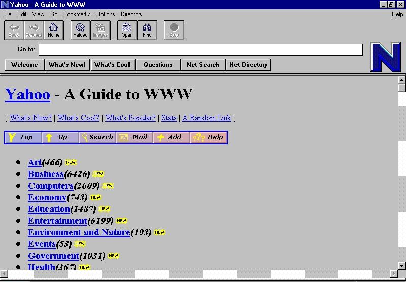
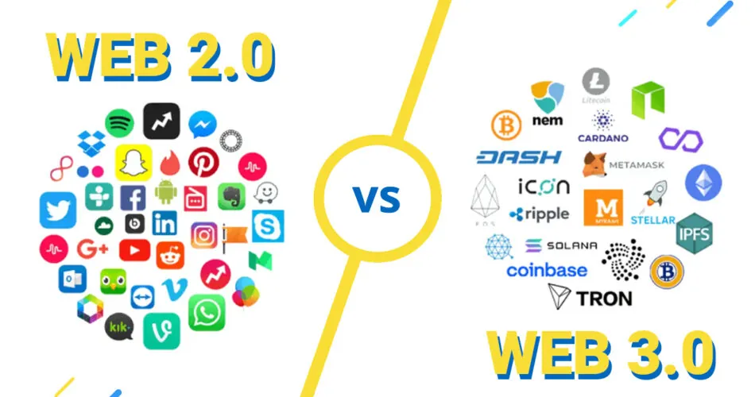
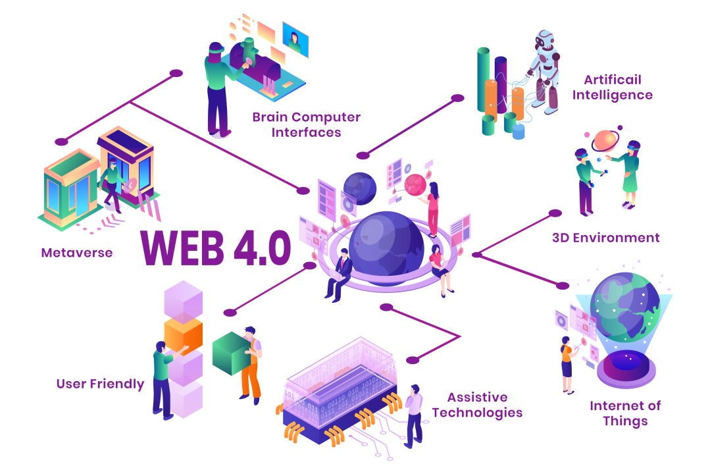
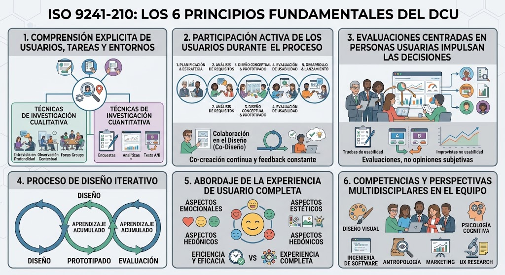
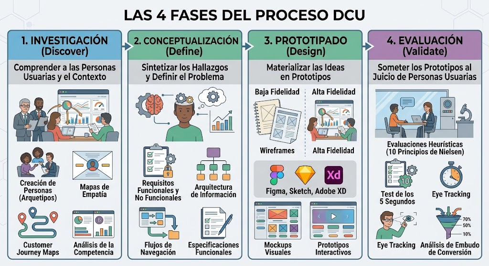
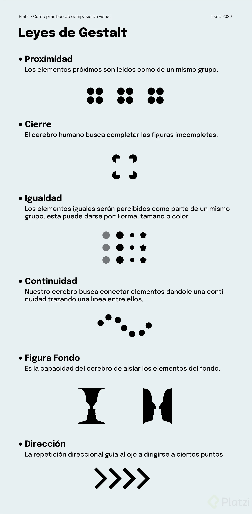

Unidad 1: Introducción al Diseño de Interfaces Web
Objetivos de aprendizaje
Al finalizar esta unidad, el alumnado será capaz de:
- Definir el concepto de interfaz web y clasificar sus distintos tipos, comprendiendo su evolución histórica y su papel en la interacción persona-ordenador.
- Distinguir entre usabilidad, experiencia de usuario (UX) y diseño de interfaz de usuario (UI), estableciendo las responsabilidades y límites de cada disciplina.
- Aplicar los principios de la comunicación visual y la teoría de la percepción (Gestalt) al diseño de páginas web sencillas.
- Analizar críticamente interfaces web reales identificando los principios de diseño visual empleados y su impacto en la experiencia de usuario.
- Construir prototipos visuales básicos en HTML y CSS que reflejen la aplicación de los principios de diseño estudiados.
- Evaluar la accesibilidad y usabilidad de una interfaz web aplicando las pautas de diseño centrado en el usuario (DCU) conforme a la norma ISO 9241-210.
- Justificar las decisiones de diseño adoptadas en un proyecto web argumentando con criterios técnicos, perceptivos y funcionales.
Relación con los Resultados de Aprendizaje
Esta unidad se vincula con los Resultados de Aprendizaje oficiales del módulo profesional 0615 Diseño de interfaces web (RD 405/2023, BOE; currículo andaluz):
-
RA1. Planifica la creación de una interfaz web valorando y aplicando especificaciones de diseño. Se aborda mediante el estudio de la evolución histórica de las interfaces (Web 1.0 a 3.0, diseño responsive, PWAs), la definición de componentes y tipos de interfaces, y la selección de enfoques de diseño adecuados según el contexto del proyecto. El alumnado aprende a identificar requisitos de interfaz antes de comenzar a diseñar.
-
RA2. Crea interfaces web homogéneos definiendo y aplicando estilos. Se trabaja mediante la aplicación de los principios de comunicación visual, las leyes de Gestalt y los principios de diseño visual (unidad, jerarquía, equilibrio, contraste, proporción, ritmo). Los ejemplos guiados y las actividades propuestas permiten al alumnado construir interfaces que mantienen coherencia visual; los fragmentos de HTML/CSS ofrecen una primera toma de contacto con hojas de estilo, variables CSS y maquetación que se profundizarán en unidades posteriores.
-
RA4. Integra contenido multimedia en documentos web valorando su aportación y seleccionando adecuadamente los elementos interactivos. Aunque el foco principal de esta unidad es la teoría del diseño, los conceptos de comunicación visual y color sientan las bases para la correcta integración de elementos multimedia, respetando principios de equilibrio, jerarquía y contraste.
-
RA5. Desarrolla interfaces web accesibles, analizando las pautas establecidas y aplicando técnicas de verificación. Se introduce mediante el estudio del diseño centrado en el usuario (DCU), las pautas WCAG y la norma ISO 9241-210, así como el análisis de casos reales con criterios de accesibilidad.
-
RA6. Desarrolla interfaces web amigables analizando y aplicando las pautas de usabilidad establecidas. El DCU estudiado en esta unidad (comprensión del usuario, flujos y evaluación) sienta las bases de la usabilidad que se desarrolla a fondo en las unidades posteriores.
Conocimientos previos
Antes de abordar esta unidad, el alumnado debe poseer los siguientes conocimientos y competencias:
-
Fundamentos de HTML. Estructura básica de un documento HTML (doctype, html, head, body), etiquetas semánticas de bloque (header, nav, main, section, article, footer) y de línea (a, strong, em, span), atributos globales (id, class, style), creación de listas, tablas y formularios sencillos. Estos conocimientos se adquieren en el primer curso del ciclo, particularmente en los módulos de Lenguajes de Marcas y Sistemas de Gestión de la Información.
-
Fundamentos de CSS. Selectores básicos (tipo, clase, id), modelo de caja (content, padding, border, margin), propiedades de color y fondo (color, background-color, background-image), unidades de medida absolutas y relativas (px, em, rem, %), y herencia en cascada. Se recomienda que el alumnado haya practicado la vinculación de hojas de estilo externas mediante la etiqueta link.
-
Competencias digitales básicas. Manejo del sistema operativo (creación de carpetas, gestión de archivos), uso de navegadores web y sus herramientas de desarrollo (DevTools: inspección de elementos, consola, panel de estilos), búsqueda efectiva de información técnica en la web.
-
Habilidades comunicativas. Capacidad de expresión escrita para documentar decisiones de diseño, elaboración de informes y presentación de trabajos. Se valorará la capacidad de argumentar y defender propuestas de diseño ante el grupo.
-
Actitud profesional. Disposición al trabajo colaborativo, respeto por las opiniones ajenas en procesos de crítica de diseño, puntualidad en las entregas, y curiosidad por analizar el diseño de las interfaces que utilizan a diario.
Contenidos
1. Concepto de interfaz web
- Definición de interfaz: frontera de comunicación entre usuario y sistema
- Componentes de una interfaz web: elementos de navegación, contenido, interacción, retroalimentación
- Tipos de interfaces: CLI (Command Line Interface), GUI (Graphical User Interface), NUI (Natural User Interface), VUI (Voice User Interface)
- Diferencias entre interfaz física, interfaz lógica e interfaz web
2. Evolución histórica del diseño web
- Web 1.0 (1991-2004): páginas estáticas, HTML plano, diseño tabular, poca interactividad
- Web 2.0 (2004-2010): AJAX, contenido generado por usuarios, redes sociales, diseño centrado en contenido
- Web 3.0 (2010-actualidad): web semántica, aplicaciones de página única (SPA), inteligencia artificial
- Diseño responsive: media queries, mobile-first, frameworks adaptativos
- Progressive Web Apps (PWA): service workers, manifiesto web, instalabilidad, experiencia offline
3. Diseño Centrado en el Usuario (DCU)
- Definición y principios según ISO 9241-210
- Fases del proceso DCU: investigación, conceptualización, prototipado, evaluación, iteración
- Beneficios: reducción de errores, aumento de satisfacción, fidelización, ahorro de costes
- Diferencias con el diseño centrado en el sistema
4. UI vs UX
- Definición de UI (User Interface): el aspecto visual, la piel del producto
- Definición de UX (User Experience): la experiencia global, la emoción, la utilidad
- Responsabilidades del diseñador UI: paletas de color, tipografía, iconografía, espaciado, guías de estilo
- Responsabilidades del diseñador UX: investigación de usuarios, arquitectura de información, wireframes, tests de usabilidad
- Relación simbiótica: por qué no puede existir buena UX sin buena UI y viceversa
5. Comunicación visual
- Definición: proceso de transmitir información mediante elementos visuales
- Elementos básicos: punto, línea, plano/forma, textura, color, espacio
- Principios compositivos: unidad, variedad, jerarquía, equilibrio, proporción, ritmo, contraste
- Relación con el diseño web: cómo cada elemento se traduce en componentes de interfaz
6. Principios de percepción visual
- Teoría de la Gestalt: el todo es más que la suma de las partes
- Leyes de la Gestalt: proximidad, semejanza, continuidad, cierre, figura-fondo, destino común, experiencia pasada
- Aplicación práctica al diseño de interfaces web
7. Principios de diseño visual
- Unidad: coherencia entre todos los elementos de la interfaz
- Jerarquía: organización de la información por orden de importancia
- Equilibrio: distribución del peso visual (simétrico, asimétrico, radial)
- Contraste: diferenciación entre elementos para guiar la atención
- Proporción: relación de tamaño entre elementos (escala, sección áurea)
- Ritmo: repetición de patrones para crear fluidez visual
Desarrollo teórico
1. ¿Qué es una interfaz web?
Definición — interfaz web
Una interfaz web es el conjunto de elementos visuales, interactivos y estructurales que permiten a una persona usuaria comunicarse con una aplicación o servicio alojado en la web. Actúa como capa mediadora entre el sistema informático backend (servidores, bases de datos, lógica de negocio) y la persona que utiliza el navegador. La interfaz traduce las complejas operaciones del sistema en elementos comprensibles y manipulables, como botones, formularios, menús, iconos, tipografías y colores.
Los componentes fundamentales de toda interfaz web son cuatro:
- Elementos de navegación — permiten a la persona usuaria desplazarse por las distintas secciones del sitio: barras de navegación superior, menús laterales, breadcrumbs, enlaces internos, barras de búsqueda y sistemas de paginación.
- Elementos de contenido — constituyen la información que la persona usuaria consume: texto, imágenes, vídeos, tablas de datos, gráficos, infografías, código incrustado, mapas y cualquier otro recurso multimedia.
- Elementos de interacción — permiten a la persona usuaria ejecutar acciones: botones, enlaces, formularios, selectores, interruptores (toggles), arrastradores (sliders), modales, tooltips y cualquier control que espere una acción del usuario para modificar el estado de la interfaz.
- Elementos de retroalimentación — informan a la persona usuaria del resultado de sus acciones: mensajes de confirmación, indicadores de carga, barras de progreso, notificaciones, cambios de color en botones al hacer hover, animaciones de transición y alertas de error.
Existen diversos tipos de interfaces de usuario, cada una con sus características, tecnologías asociadas y contextos de aplicación:
- GUI (Graphical User Interface): Es la interfaz gráfica tradicional basada en ventanas, iconos, menús y puntero (WIMP). Los usuarios interactúan mediante dispositivos como el ratón, el teclado o pantallas táctiles, manipulando representaciones visuales de objetos y acciones. Es el tipo predominante en ordenadores personales, aplicaciones web y aplicaciones móviles.

- CLI (Command Line Interface): Interfaz basada en texto donde el usuario introduce comandos mediante el teclado y recibe respuestas textuales del sistema. Aunque aparentemente arcaica, sigue siendo fundamental en entornos de desarrollo, administración de sistemas y operaciones DevOps por su eficiencia, automatización y precisión.

- VUI (Voice User Interface): Interfaz basada en voz que permite la interacción mediante comandos hablados y respuestas sonoras. Tecnologías como el procesamiento de lenguaje natural (NLP) y el reconocimiento automático del habla (ASR) la hacen posible. Asistentes como Alexa, Siri o Google Assistant son ejemplos paradigmáticos.

- NUI (Natural User Interface): Interfaces que buscan una interacción "natural" e intuitiva mediante gestos, movimientos corporales o incluso pensamientos. Las pantallas táctiles multitáctiles, los controladores de movimiento (Kinect) y los dispositivos de seguimiento ocular son ejemplos de NUI.

- TUI (Tangible User Interface): Interfaces que permiten la interacción con información digital a través de objetos físicos manipulables. Por ejemplo, un mando MIDI con diales físicos que modifica parámetros de un sintetizador digital, o Reactable, el instrumento musical electrónico que combina objetos físicos con una superficie interactiva.

- Conversacional: Lo que define a una interfaz conversacional es la capacidad de mantener un diálogo fluido, con memoria y contexto. No importa si el usuario usa la voz, un teclado o botones; lo importante es la inteligencia de la charla. Se basan en IA avanzada y lenguaje natural puro. Estas interfaces entienden instrucciones ambiguas, recuerdan lo que se ha dicho hace un rato y adaptan sus respuestas dinámicamente sin depender de comandos exactos.
En el contexto de este módulo, nos centraremos fundamentalmente en las interfaces gráficas de usuario (GUI), y más concretamente en las interfaces gráficas desarrolladas con tecnologías web, que constituyen la plataforma más extendida para aplicaciones de escritorio, web y, cada vez más, aplicaciones móviles.
2. Evolución histórica del diseño web
La evolución del diseño web puede dividirse en cuatro grandes etapas, cada una marcada por cambios tecnológicos y conceptuales que han transformado radicalmente la forma en que diseñamos y consumimos la web.
La Web 1.0 (aproximadamente 1991-2004) se caracterizó por páginas estáticas construidas con HTML plano, sin apenas separación entre contenido y presentación. El diseño se realizaba mediante tablas anidadas (table-based layout), lo que producía un código enrevesado y difícil de mantener. Las páginas eran de sólo lectura, sin interacción con la persona usuaria más allá de hacer clic en enlaces. Los colores eran planos, las tipografías limitadas a las fuentes del sistema (Arial, Times New Roman, Courier) y las imágenes estaban optimizadas para conexiones de 56 kbps. Ejemplos paradigmáticos de esta época son la primera página de Google (1998), con un diseño minimalista radical para la época, y el directorio de Yahoo!, una inmensa colección de enlaces organizados jerárquicamente.

La Web 2.0 (2004-2010) supuso una revolución conceptual: la web dejó de ser un escaparate de contenidos para convertirse en una plataforma de participación. Surgieron los blogs (WordPress, Blogger), las redes sociales (Facebook, Twitter, YouTube) y el contenido generado por las personas usuarias. Técnicamente, AJAX (Asynchronous JavaScript and XML) permitió actualizar partes de la página sin recargarla completamente, mejorando drásticamente la fluidez de la experiencia. CSS alcanzó la madurez con la especificación CSS 2.1, permitiendo separar completamente la presentación del contenido. El diseño web se profesionalizó y nacieron conceptos como la usabilidad (Jakob Nielsen) y la experiencia de usuario (Donald Norman). Visualmente, esta época se caracterizó por los degradados, los reflejos, las sombras paralelas, los botones brillantes, los iconos vectoriales, las esquinas redondeadas y el uso abundante del color azul y naranja en logotipos.
La Web 3.0 (2010-2020) está marcada por la web semántica, las aplicaciones de página única (SPA) y la profesionalización del frontend. Los frameworks de JavaScript como React, Vue y Angular han transformado el desarrollo, permitiendo construir interfaces complejas con componentes reutilizables y reactividad. CSS ha evolucionado enormemente con Flexbox, Grid, animaciones, variables CSS, consultas de contenedor y funciones como clamp() y min(). La web es móvil: en 2024, más del 60% del tráfico web mundial proviene de dispositivos móviles, lo que ha consolidado el enfoque mobile-first. El diseño responsive, acuñado por Ethan Marcotte en 2010, se basa en tres pilares:
- Rejillas flexibles — porcentajes en lugar de píxeles fijos.
- Medios flexibles — imágenes y vídeos que se adaptan al contenedor.
- Media queries — reglas CSS condicionales según las características del dispositivo.
El enfoque mobile-first, popularizado por Luke Wroblewski, propone diseñar primero para la pantalla más pequeña y luego ir añadiendo complejidad progresivamente para pantallas mayores, forzando a priorizar el contenido esencial y simplificar la navegación. Las Progressive Web Apps (PWA), impulsadas por Google desde 2015, representan la convergencia entre web y aplicaciones nativas: gracias a los service workers, el manifiesto web y HTTPS, pueden instalarse en el dispositivo, funcionar offline, recibir notificaciones push y acceder a ciertas funcionalidades del hardware. Ejemplos notables son Twitter Lite, Pinterest, Uber y Spotify Web Player.

La Web 4.0 (2022-actualidad) se define por la web simbiótica: la integración de la inteligencia artificial, el Internet de las cosas (IoT) y la computación ubicua en la experiencia web. Asistentes y chatbots integrados en las interfaces, personalización generativa, búsqueda conversacional y agentes autónomos que completan tareas por la persona usuaria están redefiniendo la navegación tradicional. Por otro lado, la descentralización mediante blockchain y los protocolos federales (ActivityPub, Mastodon, Bluesky) plantean una web menos dependiente de grandes plataformas. En el plano del diseño, la interfaz ya no es solo una pantalla: existe en voz, wearables, coches conectados y dispositivos domésticos (ambient intelligence), lo que obliga a diseñar experiencias multi-canal y accesibles por naturaleza. Visualmente predominan los diseños limpios y oscuros, los modos oscuros adaptativos, las microinteracciones, la animación sutil y los sistemas de diseño escalables.

3. Diseño Centrado en el Usuario (DCU)
Definición — Diseño Centrado en el Usuario (DCU)
El Diseño Centrado en el Usuario (DCU) es una filosofía y metodología de diseño que sitúa a la persona usuaria en el centro de todas las decisiones de diseño, desde la concepción inicial hasta la evaluación final. La norma ISO 9241-210 (Ergonomics of human-system interaction — Human-centred design for interactive systems) define el DCU como un enfoque iterativo que involucra activamente a las personas usuarias en todas las etapas del proceso de diseño, asegurando que el producto final satisfaga sus necesidades, expectativas y limitaciones.
La norma ISO 9241-210 establece seis principios fundamentales para el DCU.
- El primero es que el diseño debe basarse en una comprensión explícita de las personas usuarias, las tareas que realizan y los entornos en los que las realizan. Esto se consigue mediante técnicas de investigación cualitativa como entrevistas en profundidad, observación contextual, diarios de uso o focus groups, y técnicas cuantitativas como encuestas, analíticas web o tests A/B.
- El segundo principio es que las personas usuarias deben participar activamente durante todo el proceso de diseño y desarrollo, no solo al principio o al final.
- El tercer principio es que las decisiones de diseño deben ser impulsadas y refinadas mediante evaluaciones centradas en personas usuarias, no en opiniones subjetivas del equipo de diseño.
- El cuarto principio es que el proceso de diseño debe ser iterativo: cada ciclo de diseño, prototipado y evaluación genera aprendizajes que mejoran la siguiente iteración.
- El quinto principio es que el diseño debe abordar la experiencia de usuario completa, incluyendo aspectos emocionales, estéticos y hedónicos más allá de la mera eficiencia y eficacia.
- El sexto principio es que el equipo de diseño debe incluir competencias y perspectivas multidisciplinares: diseño visual, psicología cognitiva, ingeniería de software, antropología, marketing, etc.

Las fases del proceso DCU son cuatro.
- La fase de investigación (Discover) busca comprender quiénes son las personas usuarias, qué necesitan, en qué contexto actúan y qué problemas enfrentan. Se emplean técnicas como la creación de personas (arquetipos de usuario), mapas de empatía, customer journey maps y análisis de la competencia.
- La fase de conceptualización (Define) sintetiza los hallazgos de la investigación para definir el problema, los requisitos funcionales y no funcionales, la arquitectura de información (cómo se organiza el contenido) y los flujos de navegación. Se producen diagramas de flujo, mapas del sitio web y especificaciones funcionales.
- La fase de prototipado (Design) materializa las ideas en prototipos de baja fidelidad (bocetos en papel, wireframes) y alta fidelidad (mockups visuales, prototipos interactivos con Figma, Sketch o Adobe XD).
- La fase de evaluación (Validate) somete los prototipos al juicio de personas usuarias reales mediante tests de usabilidad moderados o no moderados, evaluaciones heurísticas (basadas en los 10 principios de Nielsen), test de los 5 segundos, eye tracking o análisis de embudo de conversión.

Beneficios del DCU
Los beneficios del DCU están ampliamente documentados:
- Reducción del tiempo de desarrollo al evitar rediseños tardíos.
- Disminución de los costes de soporte al reducir la confusión de las personas usuarias.
- Aumento de las tasas de conversión y retención.
- Mejora de la satisfacción y fidelización.
- Reducción de errores y riesgos de seguridad.
- Cumplimiento de normativas de accesibilidad que evitan sanciones legales.
4. UI vs UX: dos caras de una misma moneda
Los términos UI (User Interface) y UX (User Experience) se confunden con frecuencia, incluso en el ámbito profesional:
🎨 UI · User Interface — interfaz de usuario
Es la capa visual del producto: lo que la persona usuaria ve y con lo que interactúa directamente. Incluye la paleta de colores, la tipografía, la iconografía, el espaciado entre elementos, las animaciones, los estados de los botones (normal, hover, active, disabled, focus), los bordes, las sombras, la disposición de los elementos en la rejilla y todos los aspectos estéticos y formales del producto.
🧠 UX · User Experience — experiencia de usuario
Es la vivencia global que la persona usuaria experimenta al interactuar con el producto, incluyendo sus emociones, percepciones, satisfacción, frustraciones y la utilidad que obtiene. La UX engloba a la UI, pero va mucho más allá: incluye la arquitectura de información, los flujos de navegación, la velocidad de carga, la claridad del contenido, la accesibilidad, la confianza que transmite la marca y el servicio postventa.
La relación entre UI y UX es simbiótica e inseparable. Una interfaz visualmente deslumbrante que no permite completar las tareas básicas es un fracaso de UX, por muy bonita que sea. Inversamente, un producto perfectamente funcional con una interfaz descuidada y desagradable genera desconfianza y rechazo en las personas usuarias, aunque resuelva su problema.
Massimo Vignelli, arquitecto y diseñador
Si puedes diseñar una cosa, puedes diseñar todo.
Esta visión holística implica que el diseño de interfaces web no puede abordarse como una mera decoración superficial, sino como una disciplina que integra psicología cognitiva, principios estéticos, restricciones tecnológicas y necesidades de negocio.
Responsabilidades del diseñador UI:
- Crear y mantener guías de estilo y librerías de componentes (design systems)
- Definir las reglas de espaciado y alineación; seleccionar familias tipográficas y establecer escalas tipográficas
- Elegir paletas de color y asegurar ratios de contraste WCAG
- Diseñar iconografía coherente y definir microinteracciones (animaciones sutiles que comunican estado)
- Preparar mockups de alta fidelidad en herramientas como Figma y entregar los recursos finales al equipo de desarrollo (SVG para iconos, WebP para imágenes, fuentes en formato woff2)
Responsabilidades del diseñador UX:
- Realizar investigación de personas usuarias (entrevistas, encuestas, observación) y elaborar personas y escenarios de uso
- Diseñar la arquitectura de información (card sorting, tree testing) y crear flujos de usuario y mapas de navegación
- Elaborar wireframes de baja fidelidad; planificar y moderar tests de usabilidad
- Analizar resultados de los tests y proponer mejoras; colaborar con desarrollo para asegurar que la implementación respeta las decisiones de UX
- Defender los intereses de las personas usuarias frente a presiones de negocio o técnicas
5. Comunicación visual
La comunicación visual es el proceso mediante el cual se transmite información a través de elementos perceptibles por el sentido de la vista. En el contexto del diseño de interfaces web es el lenguaje con el que hablamos a las personas usuarias sin necesidad de palabras: cada color, cada espacio en blanco, cada línea, cada icono transmite un mensaje, evoca una emoción y guía una acción.
Los elementos básicos del lenguaje visual son seis:
- El punto — unidad mínima de comunicación visual: un punto de luz en una pantalla (píxel), un marcador en un mapa, un indicador de notificación (el clásico puntito rojo) o un punto de una lista desordenada. Aunque pequeño, puede tener un enorme poder de atracción visual cuando contrasta con su entorno.
- La línea — trayectoria de un punto en movimiento. En diseño web se materializa como bordes de cajas (
border), separadores entre secciones, subrayados de enlaces, líneas guía en rejillas o líneas estructurales en wireframes. Las líneas horizontales transmiten calma y estabilidad; las verticales, fuerza y crecimiento; las diagonales, dinamismo y movimiento. - La forma o plano — superficie delimitada por líneas. En la web cada elemento ocupa una forma rectangular (el modelo de caja de CSS), aunque mediante
border-radius,clip-pathy SVG podemos crear círculos, óvalos, triángulos y formas orgánicas. Las formas geométricas básicas transmiten diferentes sensaciones: el círculo sugiere unidad, protección y eternidad; el cuadrado, estabilidad y orden; el triángulo, dirección y tensión. - La textura — cualidad superficial de un elemento que apela al sentido del tacto, aunque en una pantalla solo la percibimos visualmente. En diseño web se simula mediante fondos con patrones repetitivos (
backgroundconrepeat), degradados que crean sensación de profundidad, sombras que sugieren relieve (box-shadow,text-shadow) y fotografías de superficies reales (madera, tela, metal). - El espacio — el vacío entre elementos o alrededor de ellos. Se controla mediante
margin(espacio externo) ypadding(espacio interno). Lejos de ser un desperdicio, es un elemento activo de diseño que agrupa, separa, jerarquiza y da respiro visual a la interfaz. - El color — el elemento con mayor impacto emocional y el primer atributo que percibe el ojo humano. Se estudiará en profundidad en la unidad 3, dedicada íntegramente a color y tipografía.
Los principios compositivos que rigen la organización de los elementos visuales son:
- La unidad — busca que todos los elementos de la interfaz se perciban como parte de un todo coherente: paletas cromáticas limitadas (3-5 colores principales), una o dos familias tipográficas, iconografía homogénea y espaciado consistente basado en una escala predefinida (4px, 8px, 16px, 32px, 64px).
- La variedad — introduce diferencias controladas para evitar la monotonía visual: un color de acento frente a una paleta neutra, una tipografía display para los titulares frente a una sans-serif para el cuerpo, o una fotografía a plena anchura para romper una sección de texto denso.
- La jerarquía — organiza los elementos por orden de importancia utilizando el tamaño (los elementos más grandes se perciben como más importantes), el color (los colores vibrantes atraen la atención frente a los neutros), la posición (en culturas occidentales, la atención se concentra en la parte superior izquierda) y el contraste (un botón de llamada a la acción con alto contraste destaca sobre un fondo neutro).
- El equilibrio — distribuye el peso visual de los elementos en la composición. El equilibrio simétrico (elementos iguales o muy similares a ambos lados de un eje) transmite estabilidad, formalidad y orden; el asimétrico (elementos diferentes pero con igual peso visual, por ejemplo un elemento grande y claro frente a uno pequeño y oscuro) transmite dinamismo y modernidad.
- La proporción — establece las relaciones de tamaño entre los elementos. La proporción áurea (aproximadamente 1:1.618), utilizada desde la antigua Grecia, genera composiciones naturalmente armoniosas. En diseño web se aplica en las escalas tipográficas, la relación entre el ancho del contenido y la barra lateral, o el tamaño de las imágenes destacadas.
- El ritmo — la repetición de elementos visuales a intervalos regulares, creando una sensación de movimiento y fluidez que guía la mirada de la persona usuaria a través de la página. Se consigue mediante la repetición de columnas de texto del mismo ancho, tarjetas de producto con la misma estructura, o la alternancia de imagen y texto en secciones sucesivas.
6. Principios de percepción visual: la Gestalt
La psicología de la Gestalt (del alemán "forma" o "configuración") nació en Alemania a principios del siglo XX de la mano de Max Wertheimer, Wolfgang Köhler y Kurt Koffka. Su premisa fundamental es que el cerebro humano percibe los objetos como totalidades organizadas, no como una mera suma de partes.
Premisa de la Gestalt
El todo es más que la suma de las partes.
Esto tiene implicaciones profundas para el diseño de interfaces web: las personas usuarias no perciben botones, textos e imágenes por separado, sino que construyen mentalmente agrupaciones, jerarquías y patrones a partir de lo que ven.
Las leyes de la Gestalt y su aplicación al diseño de interfaces:
- Ley de proximidad — los elementos que están cerca unos de otros tienden a percibirse como un grupo. En web se aplica al agrupar etiquetas (labels) junto a sus campos de formulario, al separar secciones distintas mediante márgenes generosos o al agrupar iconos y etiquetas en menús. Cuando el espaciado entre grupos es mayor que dentro de cada grupo, la organización de la información se comprende instantáneamente, sin necesidad de bordes visibles.
- Ley de semejanza — los elementos que comparten características visuales (color, forma, tamaño, textura) tienden a percibirse como relacionados. En web se justifica el uso de estilos consistentes para todos los botones de acción primaria, todas las tarjetas de contenido y todos los enlaces. La ruptura de la semejanza (por ejemplo un botón con un color diferente al resto) indica que ese elemento tiene un significado especial, generalmente una llamada a la acción principal.
- Ley de continuidad — el ojo humano tiende a seguir trayectorias suaves y continuas, percibiendo los elementos alineados como una línea o curva. En web se aplica en los menús horizontales (los ítems en fila se perciben como una secuencia continua), en los sliders (los puntos indicadores se perciben como una trayectoria de navegación) y en líneas de tiempo o procesos paso a paso representados con una línea conectora entre hitos.
- Ley de cierre — cuando una figura está incompleta, el cerebro tiende a completar mentalmente las partes que faltan para percibir una forma cerrada y reconocible. En web se utiliza en iconos (formas simplificadas que el cerebro completa), en sliders de carga (una barra parcialmente llena se percibe como completa), en logotipos que juegan con el espacio negativo (el famoso logotipo de FedEx forma una flecha entre la E y la x) y en el sistema de pestañas (la pestaña activa parece conectada al contenido que muestra).
- Ley de figura-fondo — la mente separa automáticamente la escena visual en una figura (el objeto de atención) y un fondo (todo lo demás). En web es crucial para la legibilidad del texto sobre el fondo, lo que se traduce en la exigencia de ratios de contraste adecuados según WCAG. Los modales la aprovechan: al oscurecer el fondo (overlay semitransparente), el modal se convierte en la figura clara y nítida. La relación no siempre es estable: la célebre ilusión del jarrón de Rubin (jarrón o dos rostros de perfil) nos advierte de que ciertos patrones de fondo pueden interferir con la percepción del contenido si no se aplican con moderación.
- Ley de destino común — los elementos que se mueven en la misma dirección o siguen la misma trayectoria se perciben como un grupo. En web se aplica en animaciones y transiciones: menús desplegables cuyos ítems aparecen deslizándose, galerías de imágenes con flechas de navegación o iconos que giran o cambian de color al unísono. Los sliders y carruseles son aplicaciones directas de esta ley.
- Ley de experiencia (o ley de la buena forma) — la percepción está influida por nuestras experiencias previas y nuestro contexto cultural. En web debemos apoyarnos en convenciones ampliamente asentadas: el logotipo en la esquina superior izquierda que enlaza al inicio, la lupa para la búsqueda, la hamburguesa para el menú en móvil, el subrayado azul para los enlaces, el carrito en la esquina superior derecha o el corazón para favoritos. Violar estas convenciones sin una razón muy justificada genera confusión y fricción, ya que la persona usuaria debe "desaprender" lo que ya sabe y aprender una nueva convención.

7. Principios de diseño visual aplicados a la web
Los principios de diseño visual son directrices que nos ayudan a organizar los elementos de una interfaz de manera que el resultado sea estéticamente agradable y funcionalmente eficaz. Aunque muchos de ellos tienen raíces en el diseño gráfico tradicional, su aplicación a la web presenta matices específicos.
- La unidad — busca que todos los elementos de la interfaz se perciban como partes de un mismo sistema. Se consigue limitando la paleta a 3-5 colores principales y una gama de neutros, empleando una o dos familias tipográficas como máximo, manteniendo una iconografía consistente en estilo (grosor de trazo, esquinas redondeadas o cuadradas, relleno o contorno) y aplicando un sistema de espaciado sobre una escala predefinida (cada valor múltiplo de una unidad base, por ejemplo 4px). Sistemas profesionales como Material Design (Google), IBM Carbon o Atlassian Design System se basan intensamente en este principio para garantizar que cientos de diseñadores y desarrolladores distribuidos globalmente produzcan interfaces coherentes.
- La jerarquía visual — organiza los elementos por orden de importancia para que la persona usuaria identifique instantáneamente qué es lo más relevante, dónde debe mirar primero y qué acciones puede realizar. Técnicas: el tamaño (los titulares grandes dominan sobre el cuerpo de texto pequeño), el color (un botón vibrante sobre fondo neutro atrae la mirada), la posición (arriba tiene más visibilidad que el pie; la izquierda más que la derecha en culturas de lectura izquierda-derecha), el espacio en blanco (los elementos rodeados de abundante negativo adquieren importancia), la tipografía (una negrita destaca sobre una regular, una mayúscula sobre una minúscula) y la profundidad (los elementos con sombra o superpuestos parecen estar más cerca y, por tanto, son más importantes).
- El equilibrio — es la distribución del peso visual en la composición. Cada elemento tiene un peso determinado por su tamaño (los grandes pesan más que los pequeños), su color (los oscuros y saturados pesan más que los claros y desaturados), su posición (los alejados del centro pesan más que los cercanos), su complejidad (las imágenes detalladas pesan más que las superficies planas) y su aislamiento (un elemento solitario atrae más la atención). Tipos: simétrico (reflejo especular a ambos lados de un eje vertical → formalidad, serenidad y orden; adecuado para sitios corporativos, tiendas de lujo y portales institucionales), asimétrico (elementos diferentes con pesos visuales equivalentes → dinamismo, creatividad y energía; más difícil de conseguir pero suele resultar más interesante) y radial (elementos distribuidos alrededor de un punto central, como los rayos de una rueda → dinamismo y movimiento circular).
- El contraste — es la diferencia entre dos o más elementos visuales. Sin contraste, la interfaz es plana, monótona y difícil de navegar. Puede ser de color (complementarios en el círculo cromático), de tamaño (grande vs pequeño), de forma (orgánica vs geométrica), de textura (rugoso vs liso), de tipografía (serif vs sans-serif, bold vs light), de posición (arriba vs abajo, izquierda vs derecha) o de densidad (lleno vs vacío). El contraste de color es crítico para la legibilidad: las WCAG 2.1 exigen un ratio mínimo de 4.5:1 para texto normal y 3:1 para texto grande (más de 18px o 14px en negrita) en el nivel AA, y 7:1 y 4.5:1 respectivamente en el nivel AAA.
- La proporción — es la relación de tamaño entre los elementos y entre las partes y el todo. La proporción áurea (aproximadamente 1:1.618, también conocida como número phi o divina proporción) ha sido utilizada por artistas, arquitectos y diseñadores durante siglos por su capacidad de generar composiciones visualmente armoniosas. En diseño web puede aplicarse al ancho del contenedor principal en relación con la barra lateral, a la altura de la cabecera en relación con el área de contenido, al tamaño de las imágenes destacadas, o a la escala tipográfica donde cada nivel de encabezado es aproximadamente 1.618 veces mayor que el anterior.
- El ritmo — es la repetición de elementos a intervalos regulares o variables, creando una sensación de movimiento que guía la mirada de la persona usuaria a lo largo de la página. El ritmo regular repite los mismos elementos a intervalos idénticos (una cuadrícula de tarjetas de producto); el alterno alterna dos o más elementos diferentes siguiendo un patrón (secciones de texto a la izquierda e imagen a la derecha); el progresivo cambia gradualmente tamaño, color o espaciado, creando una sensación de progresión o crescendo visual.
Ejemplos guiados
Ejemplo 1: Aplicación de la ley de proximidad en un formulario de registro
Contexto pedagógico
La persona estudiante debe comprender cómo el espaciado entre grupos de campos de un formulario comunica la estructura del mismo sin necesidad de separadores explícitos. Este ejemplo muestra la diferencia entre un formulario con espaciado uniforme (donde no se distinguen los grupos) y otro con espaciado intencionado que aplica la ley de proximidad.
<!DOCTYPE html>
<html lang="es">
<head>
<meta charset="UTF-8">
<meta name="viewport" content="width=device-width, initial-scale=1.0">
<title>Ejemplo 1: Ley de Proximidad en Formulario</title>
<link rel="stylesheet" href="./styles.css">
</head>
<body>
<!--
ESTRUCTURA DEL FORMULARIO
Observa cómo los campos están agrupados lógicamente:
1. Datos personales (nombre, apellidos, teléfono)
2. Datos de acceso (email, contraseña, confirmar contraseña)
La separación visual entre grupos es mayor que la separación
dentro de cada grupo. Esto es la ley de proximidad en acción.
-->
<div class="contenedor-formulario">
<h1>Crear Cuenta</h1>
<p class="subtitulo">Completa tus datos para registrarte</p>
<!-- GRUPO 1: Datos personales -->
<div class="grupo-campo">
<div class="campo">
<label for="nombre">Nombre</label>
<input type="text" id="nombre" placeholder="Tu nombre">
</div>
<div class="campo">
<label for="apellidos">Apellidos</label>
<input type="text" id="apellidos" placeholder="Tus apellidos">
</div>
<div class="campo">
<label for="telefono">Teléfono</label>
<input type="tel" id="telefono" placeholder="+34 600 000 000">
</div>
</div>
<!-- Separador visual -->
<hr class="separador">
<!-- GRUPO 2: Datos de acceso -->
<div class="grupo-campo">
<div class="campo">
<label for="email">Correo electrónico</label>
<input type="email" id="email" placeholder="tu@email.com">
</div>
<div class="campo">
<label for="password">Contraseña</label>
<input type="password" id="password" placeholder="Mínimo 8 caracteres">
</div>
<div class="campo">
<label for="confirmar">Confirmar contraseña</label>
<input type="password" id="confirmar" placeholder="Repite tu contraseña">
</div>
</div>
<button type="submit">Crear cuenta</button>
</div>
</body>
</html>
* {
margin: 0;
padding: 0;
box-sizing: border-box;
}
body {
font-family: 'Segoe UI', Tahoma, Geneva, Verdana, sans-serif;
background: linear-gradient(135deg, #667eea 0%, #764ba2 100%);
min-height: 100vh;
display: flex;
align-items: center;
justify-content: center;
padding: 2rem;
}
.contenedor-formulario {
background: #ffffff;
border-radius: 16px;
box-shadow: 0 20px 60px rgba(0, 0, 0, 0.15);
padding: 2.5rem;
width: 100%;
max-width: 500px;
}
h1 {
color: #2d3748;
font-size: 1.75rem;
font-weight: 700;
margin-bottom: 0.5rem;
text-align: center;
}
.subtitulo {
color: #718096;
font-size: 0.95rem;
text-align: center;
margin-bottom: 2rem;
}
/*
* APLICACIÓN DE LA LEY DE PROXIMIDAD
*
* Cada grupo de campos relacionados está envuelto en un fieldset
* con un margen inferior de 1.5rem. Dentro de cada grupo,
* los elementos están separados por solo 0.75rem.
*
* La diferencia entre el margen entre grupos (1.5rem) y el margen
* dentro del grupo (0.75rem) crea una jerarquía visual que el cerebro
* interpreta como "estos elementos pertenecen juntos y aquellos otros
* pertenecen a otro grupo".
*/
.grupo-campo {
margin-bottom: 1.5rem; /* Espacio entre grupos diferentes */
}
.campo {
margin-bottom: 0.75rem; /* Espacio dentro del mismo grupo */
}
.campo:last-child {
margin-bottom: 0; /* El último campo del grupo no necesita margen */
}
label {
display: block;
color: #4a5568;
font-size: 0.875rem;
font-weight: 600;
margin-bottom: 0.375rem;
}
input[type="text"],
input[type="email"],
input[type="password"],
input[type="tel"] {
width: 100%;
padding: 0.75rem 1rem;
border: 2px solid #e2e8f0;
border-radius: 8px;
font-size: 1rem;
color: #2d3748;
transition: border-color 0.2s ease, box-shadow 0.2s ease;
}
input:focus {
outline: none;
border-color: #667eea;
box-shadow: 0 0 0 3px rgba(102, 126, 234, 0.2);
}
.separador {
border: none;
border-top: 1px solid #e2e8f0;
margin: 1.5rem 0;
}
button {
width: 100%;
padding: 0.875rem 2rem;
background: linear-gradient(135deg, #667eea 0%, #764ba2 100%);
color: #ffffff;
border: none;
border-radius: 8px;
font-size: 1.05rem;
font-weight: 600;
cursor: pointer;
transition: transform 0.15s ease, box-shadow 0.15s ease;
margin-top: 0.5rem;
}
button:hover {
transform: translateY(-2px) scale(1.02);
box-shadow: 0 8px 20px rgba(102, 126, 234, 0.4);
}
Explicación del resultado
Al abrir este formulario en el navegador, la persona usuaria percibe inmediatamente dos bloques de información diferenciados: los datos personales y los datos de acceso. Esta percepción no requiere leer las etiquetas ni comprender el contenido; es el espaciado el que comunica la agrupación. La ley de proximidad opera de manera preconsciente: el margen de 1.5rem entre grupos frente a los 0.75rem dentro de cada grupo crea una diferencia de espaciado que el sistema visual interpreta como pertenencia. Se recomienda al alumnado inspeccionar el elemento con las DevTools del navegador y modificar temporalmente los márgenes para comprobar cómo afecta a la percepción de la estructura.
Ejemplo 2: Ley de semejanza aplicada a tarjetas de contenido
Contexto pedagógico
Este ejemplo demuestra cómo la repetición de características visuales (misma estructura de tarjeta, misma tipografía, mismo sombreado) permite a la persona usuaria identificar rápidamente que varios elementos pertenecen a la misma categoría, aunque su contenido sea completamente diferente. Se incluye un botón "destacado" que rompe deliberadamente la semejanza para demostrar cómo esta ruptura comunica un significado especial.
<!DOCTYPE html>
<html lang="es">
<head>
<meta charset="UTF-8">
<meta name="viewport" content="width=device-width, initial-scale=1.0">
<title>Ejemplo 2: Ley de Semejanza - Tarjetas de Planes</title>
<link rel="stylesheet" href="./styles.css">
</head>
<body>
<h1>Elige tu plan</h1>
<p class="subtitulo">Selecciona el plan que mejor se adapte a tus necesidades</p>
<div class="contenedor-planes">
<!-- PLAN BÁSICO -->
<article class="plan">
<p class="nombre-plan">Básico</p>
<p class="precio">
<span class="moneda">€</span>0<span class="periodo">/mes</span>
</p>
<p class="descripcion">Ideal para empezar y conocer la plataforma</p>
<ul class="caracteristicas">
<li>Hasta 3 proyectos</li>
<li>1 GB de almacenamiento</li>
<li>Soporte por email</li>
<li>Acceso a componentes básicos</li>
</ul>
<a href="#" class="boton-plan">Comenzar gratis</a>
</article>
<!-- PLAN PROFESIONAL (DESTACADO) -->
<article class="plan destacado">
<span class="etiqueta-popular">Popular</span>
<p class="nombre-plan">Profesional</p>
<p class="precio">
<span class="moneda">€</span>29<span class="periodo">/mes</span>
</p>
<p class="descripcion">La opción más elegida por profesionales</p>
<ul class="caracteristicas">
<li>Proyectos ilimitados</li>
<li>50 GB de almacenamiento</li>
<li>Soporte prioritario 24/7</li>
<li>Acceso a todos los componentes</li>
<li>Exportación de código</li>
</ul>
<a href="#" class="boton-plan">Elegir Profesional</a>
</article>
<!-- PLAN EMPRESA -->
<article class="plan">
<p class="nombre-plan">Empresa</p>
<p class="precio">
<span class="moneda">€</span>99<span class="periodo">/mes</span>
</p>
<p class="descripcion">Para equipos grandes con necesidades avanzadas</p>
<ul class="caracteristicas">
<li>Todo lo de Profesional</li>
<li>200 GB de almacenamiento</li>
<li>Gestión de equipos</li>
<li>API personalizada</li>
<li>Formación incluida</li>
</ul>
<a href="#" class="boton-plan">Contactar ventas</a>
</article>
</div>
</body>
</html>
* {
margin: 0;
padding: 0;
box-sizing: border-box;
}
body {
font-family: 'Segoe UI', Tahoma, Geneva, Verdana, sans-serif;
background: linear-gradient(to bottom, #f7fafc, #edf2f7);
min-height: 100vh;
padding: 4rem 2rem;
}
h1 {
text-align: center;
color: #1a202c;
font-size: 2rem;
margin-bottom: 0.5rem;
}
.subtitulo {
text-align: center;
color: #718096;
margin-bottom: 3rem;
font-size: 1.1rem;
}
.contenedor-planes {
display: grid;
grid-template-columns: repeat(auto-fit, minmax(280px, 1fr));
gap: 2rem;
max-width: 1100px;
margin: 0 auto;
}
/*
* TARJETA BASE
*
* Todas las tarjetas comparten estas características visuales,
* lo que hace que el cerebro las perciba como miembros de una misma
* familia. Esto es la ley de semejanza en acción.
*
* Observa que la semejanza se establece mediante MÚLTIPLES atributos:
* - Misma forma (borde redondeado)
* - Mismo tipo de sombra
* - Misma estructura interna (título, precio, lista, botón)
* - Misma tipografía y espaciado
*/
.plan {
background: #ffffff;
border-radius: 12px;
padding: 2rem;
text-align: center;
box-shadow: 0 4px 6px rgba(0, 0, 0, 0.07);
transition: transform 0.3s ease, box-shadow 0.3s ease;
border: 2px solid transparent;
}
.plan:hover {
transform: translateY(-5px);
box-shadow: 0 12px 24px rgba(0, 0, 0, 0.1);
}
/*
* RUPTURA DE SEMEJANZA: PLAN DESTACADO
*
* El plan "Profesional" rompe deliberadamente la semejanza añadiendo
* un borde coloreado y un ligero cambio de escala.
* Esta ruptura comunica a la persona usuaria que este plan tiene
* un significado especial, es el recomendado.
*
* El cerebro detecta la diferencia instantáneamente porque el resto
* de tarjetas son idénticas entre sí, lo que hace que la excepción
* destaque poderosamente.
*/
.plan.destacado {
border-color: #667eea;
transform: scale(1.03);
box-shadow: 0 8px 16px rgba(102, 126, 234, 0.2);
position: relative;
}
.plan.destacado:hover {
transform: scale(1.05) translateY(-5px);
box-shadow: 0 16px 32px rgba(102, 126, 234, 0.25);
}
.etiqueta-popular {
position: absolute;
top: -12px;
right: 20px;
background: linear-gradient(135deg, #667eea, #764ba2);
color: #ffffff;
font-size: 0.75rem;
font-weight: 700;
text-transform: uppercase;
letter-spacing: 0.5px;
padding: 0.35rem 0.85rem;
border-radius: 20px;
}
.nombre-plan {
color: #718096;
font-size: 1rem;
font-weight: 600;
text-transform: uppercase;
letter-spacing: 1px;
margin-bottom: 1rem;
}
.precio {
font-size: 2.5rem;
font-weight: 800;
color: #1a202c;
margin-bottom: 0.25rem;
}
.precio .moneda {
font-size: 1.25rem;
vertical-align: super;
}
.precio .periodo {
font-size: 0.9rem;
color: #a0aec0;
font-weight: 400;
}
.descripcion {
color: #718096;
font-size: 0.9rem;
margin-bottom: 1.5rem;
line-height: 1.5;
}
.caracteristicas {
list-style: none;
text-align: left;
margin-bottom: 2rem;
}
.caracteristicas li {
padding: 0.5rem 0;
color: #4a5568;
font-size: 0.9rem;
}
.caracteristicas li::before {
content: "\2713";
color: #48bb78;
font-weight: bold;
margin-right: 0.5rem;
}
.boton-plan {
display: inline-block;
width: 100%;
padding: 0.75rem 1.5rem;
border: 2px solid #e2e8f0;
border-radius: 8px;
color: #4a5568;
font-weight: 600;
text-decoration: none;
transition: all 0.2s ease;
cursor: pointer;
}
.boton-plan:hover {
background-color: #f7fafc;
border-color: #cbd5e0;
}
/* El botón del plan destacado usa el color principal */
.plan.destacado .boton-plan {
background: linear-gradient(135deg, #667eea, #764ba2);
color: #ffffff;
border-color: transparent;
}
.plan.destacado .boton-plan:hover {
box-shadow: 0 4px 12px rgba(102, 126, 234, 0.4);
}
Explicación del resultado
Al visualizar esta página, la persona usuaria reconoce al instante que los tres bloques son "planes de precios" porque comparten la misma estructura visual. No necesita leer ningún texto para saber que pertenecen a la misma categoría. El plan "Profesional" destaca inmediatamente sobre los otros dos porque rompe el patrón de semejanza: tiene un borde morado, está ligeramente escalado, y su botón tiene un color diferente. Esta ruptura es efectiva precisamente porque el resto de tarjetas son extremadamente semejantes entre sí. Se recomienda al alumnado comentar la clase .destacado en las DevTools para comprobar cómo las tres tarjetas se vuelven visualmente idénticas y desaparece la jerarquía de recomendación.
Ejemplo 3: Principios Gestalt combinados en una sección hero
Contexto pedagógico
Este ejemplo integra varias leyes de Gestalt en un mismo componente: la sección hero de una landing page. Se aplican simultáneamente la ley de figura-fondo (texto sobre imagen con overlay), la ley de proximidad (agrupación del texto y el botón), la ley de semejanza (estilo consistente de los botones) y la ley de cierre (uso del espacio negativo para sugerir formas).
<!DOCTYPE html>
<html lang="es">
<head>
<meta charset="UTF-8">
<meta name="viewport" content="width=device-width, initial-scale=1.0">
<title>Ejemplo 3: Gestalt en Sección Hero</title>
<link rel="stylesheet" href="./styles.css">
</head>
<body>
<section class="hero">
<div class="hero-contenido">
<h1>Diseña interfaces que las personas amen usar</h1>
<p>
Creamos experiencias digitales centradas en el usuario, aplicando
los principios de la psicología de la percepción para construir
productos intuitivos, accesibles y memorables.
</p>
<div class="hero-botones">
<a href="#" class="boton-primario">Comenzar proyecto</a>
<a href="#" class="boton-secundario">Ver demostración</a>
</div>
</div>
<div class="scroll-indicador">
<span>Descubre más</span>
<div class="flecha"></div>
</div>
</section>
</body>
</html>
* {
margin: 0;
padding: 0;
box-sizing: border-box;
}
body {
font-family: 'Segoe UI', system-ui, -apple-system, sans-serif;
line-height: 1.6;
}
/*
* SECCIÓN HERO
*
* LEY DE FIGURA-FONDO: La imagen de fondo se oscurece con un overlay
* semitransparente (linear-gradient) para que el texto (la figura)
* destaque nítidamente sobre el fondo. Sin este overlay, el texto
* blanco sería ilegible sobre ciertas partes de la imagen.
*/
.hero {
position: relative;
min-height: 85vh;
background:
linear-gradient(135deg, rgba(30, 30, 60, 0.85) 0%, rgba(10, 10, 30, 0.7) 100%),
url('https://images.unsplash.com/photo-1497366216548-37526070297c?w=1200&q=80')
center/cover no-repeat;
display: flex;
align-items: center;
justify-content: center;
text-align: center;
padding: 2rem;
}
/*
* LEY DE PROXIMIDAD
*
* El contenido textual y los botones están agrupados en un
* contenedor con espaciado interno uniforme.
*/
.hero-contenido {
max-width: 750px;
color: #ffffff;
}
.hero-contenido h1 {
font-size: clamp(2.25rem, 5vw, 3.5rem);
font-weight: 800;
letter-spacing: -0.5px;
margin-bottom: 1.25rem;
line-height: 1.15;
}
.hero-contenido p {
font-size: 1.15rem;
color: rgba(255, 255, 255, 0.85);
margin-bottom: 2.5rem;
max-width: 550px;
margin-left: auto;
margin-right: auto;
line-height: 1.7;
}
/*
* LEY DE SEMEJANZA APLICADA A BOTONES
*
* Ambos botones comparten la misma altura, padding, radio de borde,
* peso tipográfico y transición. La diferenciación entre primario y
* secundario se consigue mediante el color.
*/
.hero-botones {
display: flex;
gap: 1rem;
justify-content: center;
flex-wrap: wrap;
}
.boton-primario,
.boton-secundario {
padding: 0.875rem 2rem;
border-radius: 8px;
font-size: 1rem;
font-weight: 600;
text-decoration: none;
transition: all 0.25s ease;
cursor: pointer;
}
.boton-primario {
background-color: #ffffff;
color: #1a1a2e;
border: 2px solid #ffffff;
}
.boton-primario:hover {
background-color: transparent;
color: #ffffff;
transform: translateY(-2px);
box-shadow: 0 8px 20px rgba(255, 255, 255, 0.25);
}
.boton-secundario {
background-color: transparent;
color: #ffffff;
border: 2px solid rgba(255, 255, 255, 0.5);
}
.boton-secundario:hover {
border-color: #ffffff;
background-color: rgba(255, 255, 255, 0.1);
transform: translateY(-2px);
}
/*
* LEY DE CIERRE + LEY DE DESTINO COMÚN
*
* El indicador de scroll es una forma incompleta (flecha formada
* por dos bordes) que el cerebro completa. La animación de rebote
* sugiere movimiento hacia abajo (destino común).
*/
.scroll-indicador {
position: absolute;
bottom: 2.5rem;
left: 50%;
transform: translateX(-50%);
display: flex;
flex-direction: column;
align-items: center;
gap: 0.5rem;
color: rgba(255, 255, 255, 0.6);
font-size: 0.75rem;
text-transform: uppercase;
letter-spacing: 2px;
}
.scroll-indicador .flecha {
width: 24px;
height: 24px;
border-right: 2px solid rgba(255, 255, 255, 0.6);
border-bottom: 2px solid rgba(255, 255, 255, 0.6);
transform: rotate(45deg);
animation: rebote 1.8s ease-in-out infinite;
}
@keyframes rebote {
0%, 100% {
transform: rotate(45deg) translate(0, 0);
}
50% {
transform: rotate(45deg) translate(6px, 6px);
}
}
Explicación del resultado
Esta sección hero demuestra cómo los principios de la Gestalt operan simultáneamente y de forma sinérgica en una interfaz real. La ley de figura-fondo garantiza la legibilidad del texto sobre la imagen, la ley de proximidad agrupa el contenido textual y los botones como una unidad informativa, la ley de semejanza permite identificar ambos botones como elementos de acción del mismo tipo, y la ley de cierre (combinada con destino común) crea un indicador de scroll que invita a continuar navegando. Se recomienda al alumnado modificar en las DevTools el valor de opacidad del overlay para comprobar cómo afecta la ley de figura-fondo a la legibilidad.
Ejemplo 4: Jerarquía visual mediante tamaño, color y espacio
Contexto pedagógico
Una página de artículo de blog donde se demuestra cómo establecer jerarquía visual utilizando exclusivamente propiedades CSS: el título destaca por su gran tamaño y color oscuro, el subtítulo tiene un tamaño intermedio y color gris medio, los metadatos tienen un tamaño pequeño y color gris claro, y el cuerpo del texto ocupa el nivel base.
<!DOCTYPE html>
<html lang="es">
<head>
<meta charset="UTF-8">
<meta name="viewport" content="width=device-width, initial-scale=1.0">
<title>Ejemplo 4: Jerarquía Visual - Artículo de Blog</title>
<link rel="stylesheet" href="./styles.css">
</head>
<body>
<article class="articulo">
<h1>Los principios de la Gestalt y su aplicación al diseño de interfaces web modernas</h1>
<p class="metadatos">
<span>María García López</span> — 15 de marzo de 2025 — 8 min de lectura
</p>
<p class="entradilla">
La psicología de la forma, desarrollada hace más de un siglo, proporciona
hoy las bases teóricas para diseñar interfaces digitales que las personas
comprenden de forma intuitiva y casi instantánea.
</p>
<p>
Cuando abrimos una página web, nuestro cerebro tarda aproximadamente 50
milisegundos en formarse una primera impresión visual. En ese brevísimo
lapso de tiempo no leemos textos ni analizamos imágenes: simplemente
percibimos formas, colores, agrupaciones y contrastes. Esa percepción
instantánea está gobernada por los principios que la psicología de la
Gestalt descubrió a principios del siglo XX.
</p>
<p>
Max Wertheimer, Wolfgang Köhler y Kurt Koffka formularon las leyes de la
percepción visual basándose en una observación revolucionaria: el cerebro
humano no percibe los objetos como sumas de partes independientes, sino
como totalidades organizadas. Esta idea, condensada en el famoso aforismo
"el todo es más que la suma de las partes", tiene implicaciones profundas
para quienes diseñamos interfaces digitales.
</p>
<h2>La ley de proximidad en formularios</h2>
<p>
Uno de los casos de uso más evidentes de la ley de proximidad se encuentra
en el diseño de formularios web. Cuando colocamos la etiqueta "Nombre"
justo encima de su campo de texto y separamos este conjunto del siguiente
campo mediante un espacio mayor, la persona usuaria no necesita leer las
etiquetas para comprender qué texto pertenece a qué campo.
</p>
<blockquote>
"Un buen diseño es aquel que no necesita ser explicado. La interfaz debe
ser tan intuitiva que la persona usuaria sepa qué hacer sin pensar en ello."
<footer>— Steve Krug, <cite>Don't Make Me Think</cite></footer>
</blockquote>
<p>
La aplicación consciente de estos principios no es un ejercicio académico
abstracto, sino una herramienta práctica que todo diseñador y desarrollador
web debería dominar. Comprender por qué ciertas disposiciones visuales
funcionan y otras generan confusión nos permite tomar decisiones de diseño
basadas en evidencia, no en gustos personales.
</p>
<figure>
<img
src="https://images.unsplash.com/photo-1559028012-481c04fa702d?w=800&q=80"
alt="Persona diseñando una interfaz web en una pantalla"
loading="lazy"
>
<figcaption>El diseño de interfaces es una disciplina que combina psicología, arte y tecnología.</figcaption>
</figure>
<h2>Más allá de la estética</h2>
<p>
Diseñar interfaces no consiste en hacer cosas bonitas. Consiste en hacer
cosas que funcionen. La belleza en el diseño de interfaces no es un fin en
sí misma, sino una consecuencia de la claridad, la coherencia y el respeto
por la forma en que el cerebro humano procesa la información visual.
</p>
<p>
En las próximas unidades profundizaremos en cada uno de estos principios y
aprenderemos a aplicarlos sistemáticamente mediante hojas de estilo en
cascada, construyendo interfaces que no solo sean visualmente armoniosas,
sino también funcionalmente impecables.
</p>
</article>
</body>
</html>
* {
margin: 0;
padding: 0;
box-sizing: border-box;
}
body {
font-family: Georgia, 'Times New Roman', serif;
background-color: #fafafa;
color: #333333;
line-height: 1.8;
}
.articulo {
max-width: 700px;
margin: 0 auto;
padding: 4rem 2rem;
}
/*
* JERARQUÍA VISUAL APLICADA
*
* Nivel 1 - TÍTULO (máxima jerarquía):
* - Tamaño grande (2.5rem)
* - Color oscuro (casi negro)
* - Gran margen inferior
* - Peso bold (800)
*
* Nivel 2 - METADATOS (jerarquía baja):
* - Tamaño pequeño
* - Color gris claro
* - Texto en mayúsculas con letter-spacing
*
* Nivel 3 - ENTRADILLA (jerarquía media-alta):
* - Tamaño intermedio (1.25rem)
* - Estilo itálico para diferenciarse del cuerpo
* - Color gris medio
*
* Nivel 4 - CUERPO DE TEXTO (jerarquía base):
* - Tamaño estándar para lectura (1.1rem)
*
* Nivel 5 - CITA DESTACADA (jerarquía alta por ruptura):
* - Rompe el flujo de lectura con un borde lateral
* - Tamaño mayor que el cuerpo
* - Fondo de color sutil
*/
.articulo h1 {
font-size: 2.5rem;
font-weight: 800;
color: #111111;
line-height: 1.2;
margin-bottom: 0.75rem;
letter-spacing: -0.5px;
}
.metadatos {
font-family: 'Segoe UI', system-ui, sans-serif;
font-size: 0.8rem;
color: #999999;
text-transform: uppercase;
letter-spacing: 1.5px;
margin-bottom: 2.5rem;
}
.metadatos span {
color: #555555;
font-weight: 600;
}
.entradilla {
font-size: 1.25rem;
color: #666666;
font-style: italic;
line-height: 1.7;
margin-bottom: 2rem;
padding-bottom: 2rem;
border-bottom: 1px solid #e8e8e8;
}
.articulo h2 {
font-family: 'Segoe UI', system-ui, sans-serif;
font-size: 1.5rem;
font-weight: 700;
color: #1a1a2e;
margin-top: 2.5rem;
margin-bottom: 1rem;
}
.articulo p {
font-size: 1.1rem;
margin-bottom: 1.5rem;
}
blockquote {
border-left: 4px solid #667eea;
margin: 2.5rem 0;
padding: 1.25rem 2rem;
background-color: #f0f0ff;
font-size: 1.2rem;
color: #2d2d5e;
font-style: italic;
border-radius: 0 8px 8px 0;
}
blockquote footer {
font-family: 'Segoe UI', system-ui, sans-serif;
font-size: 0.85rem;
font-style: normal;
color: #888888;
margin-top: 0.75rem;
}
.articulo figure {
margin: 2.5rem 0;
}
.articulo figure img {
width: 100%;
border-radius: 8px;
display: block;
}
.articulo figure figcaption {
font-family: 'Segoe UI', system-ui, sans-serif;
font-size: 0.8rem;
color: #999999;
text-align: center;
margin-top: 0.75rem;
}
Explicación del resultado
Al abrir esta página, la mirada sigue un recorrido natural: primero se posa en el título (elemento de mayor tamaño y contraste), luego desciende a los metadatos (información contextual), posteriormente a la entradilla y finalmente al cuerpo del texto. La cita destacada interrumpe este flujo con un bloque de color diferente y un borde lateral, reclamando atención en un momento estratégico. Se recomienda modificar el font-size del título a 1rem en las DevTools para comprobar cómo colapsa la jerarquía visual.
Ejemplo 5: Equilibrio simétrico vs asimétrico en una sección de características
Contexto pedagógico
Este ejemplo presenta dos versiones de la misma sección de características de un producto software, una con equilibrio simétrico y otra con equilibrio asimétrico. El alumnado puede comparar visualmente ambas versiones y analizar las sensaciones que transmite cada una.
<!DOCTYPE html>
<html lang="es">
<head>
<meta charset="UTF-8">
<meta name="viewport" content="width=device-width, initial-scale=1.0">
<title>Ejemplo 5: Equilibrio Simétrico vs Asimétrico</title>
<link rel="stylesheet" href="./styles.css">
</head>
<body>
<section class="seccion">
<span class="version simetrica">Versión A: Equilibrio Simétrico</span>
<h2>Características del producto</h2>
<p class="subtitulo-seccion">Todo lo que necesitas en un solo lugar</p>
<div class="simetrico">
<div class="tarjeta">
<div class="icono">⚡</div>
<div>
<h3>Velocidad ultrarrápida</h3>
<p>Nuestra infraestructura global garantiza tiempos de carga inferiores a 200ms en cualquier ubicación.</p>
</div>
</div>
<div class="tarjeta">
<div class="icono">🔒</div>
<div>
<h3>Seguridad avanzada</h3>
<p>Cifrado de extremo a extremo y autenticación multifactor para proteger tus datos en todo momento.</p>
</div>
</div>
<div class="tarjeta">
<div class="icono">📊</div>
<div>
<h3>Analíticas detalladas</h3>
<p>Paneles de control personalizables con informes en tiempo real sobre el uso de tu aplicación.</p>
</div>
</div>
<div class="tarjeta">
<div class="icono">🔄</div>
<div>
<h3>Integraciones ilimitadas</h3>
<p>Conecta con más de 200 herramientas a través de nuestra API REST y webhooks configurables.</p>
</div>
</div>
</div>
</section>
<section class="seccion">
<span class="version asimetrica">Versión B: Equilibrio Asimétrico</span>
<h2>Características del producto</h2>
<p class="subtitulo-seccion">Todo lo que necesitas en un solo lugar</p>
<div class="asimetrico">
<div class="tarjeta">
<h3>⚡ Velocidad ultrarrápida</h3>
<p>Nuestra infraestructura global garantiza tiempos de carga inferiores a 200ms en cualquier ubicación del mundo, optimizada para dispositivos móviles y conexiones lentas.</p>
</div>
<div class="tarjeta">
<h3>🔒 Seguridad avanzada</h3>
<p>Cifrado de extremo a extremo y autenticación multifactor para proteger tus datos.</p>
</div>
<div class="tarjeta">
<h3>📊 Analíticas detalladas</h3>
<p>Paneles de control personalizables con informes en tiempo real.</p>
</div>
<div class="tarjeta">
<h3>🔄 Integraciones</h3>
<p>Conecta con más de 200 herramientas a través de nuestra API REST.</p>
</div>
</div>
</section>
</body>
</html>
* {
margin: 0;
padding: 0;
box-sizing: border-box;
}
body {
font-family: 'Segoe UI', system-ui, sans-serif;
background: #f5f5f5;
}
.seccion {
max-width: 1000px;
margin: 3rem auto;
padding: 2rem;
}
h2 {
text-align: center;
font-size: 1.75rem;
color: #1a1a2e;
margin-bottom: 0.5rem;
}
.subtitulo-seccion {
text-align: center;
color: #666;
margin-bottom: 3rem;
font-size: 1rem;
}
/* VERSIÓN A: EQUILIBRIO SIMÉTRICO */
.simetrico {
display: grid;
grid-template-columns: repeat(2, 1fr);
gap: 2rem;
margin-bottom: 4rem;
}
.simetrico .tarjeta {
background: white;
padding: 2rem;
border-radius: 12px;
box-shadow: 0 2px 8px rgba(0,0,0,0.05);
display: flex;
gap: 1.25rem;
align-items: flex-start;
transition: box-shadow 0.2s ease;
}
.simetrico .tarjeta:hover {
box-shadow: 0 8px 24px rgba(0,0,0,0.1);
}
.simetrico .icono {
width: 48px;
height: 48px;
border-radius: 12px;
background: linear-gradient(135deg, #667eea, #764ba2);
display: flex;
align-items: center;
justify-content: center;
color: white;
font-size: 1.5rem;
flex-shrink: 0;
}
.simetrico h3 {
font-size: 1.1rem;
color: #1a1a2e;
margin-bottom: 0.5rem;
}
.simetrico p {
color: #666;
font-size: 0.9rem;
line-height: 1.5;
}
/* VERSIÓN B: EQUILIBRIO ASIMÉTRICO */
.asimetrico {
display: grid;
grid-template-columns: repeat(3, 1fr);
gap: 1.5rem;
}
.asimetrico .tarjeta {
background: white;
padding: 1.75rem;
border-radius: 12px;
box-shadow: 0 2px 8px rgba(0,0,0,0.05);
transition: box-shadow 0.2s ease;
}
.asimetrico .tarjeta:hover {
box-shadow: 0 8px 24px rgba(0,0,0,0.1);
}
/* La primera tarjeta ocupa 2 de 3 columnas */
.asimetrico .tarjeta:nth-child(1) {
grid-column: span 2;
background: linear-gradient(135deg, #667eea, #764ba2);
color: white;
}
.asimetrico .tarjeta:nth-child(1) h3,
.asimetrico .tarjeta:nth-child(1) p {
color: white;
}
.asimetrico h3 {
font-size: 1.1rem;
color: #1a1a2e;
margin-bottom: 0.5rem;
}
.asimetrico p {
color: #666;
font-size: 0.9rem;
line-height: 1.5;
}
.version {
display: inline-block;
font-family: 'Segoe UI', system-ui, sans-serif;
font-size: 0.7rem;
font-weight: 700;
text-transform: uppercase;
letter-spacing: 1px;
padding: 0.25rem 0.75rem;
border-radius: 20px;
margin-bottom: 2rem;
}
.version.simetrica {
background: #e2e8f0;
color: #4a5568;
}
.version.asimetrica {
background: #fed7d7;
color: #9b2c2c;
}
Explicación del resultado
Al comparar ambas versiones, la simétrica transmite orden, previsibilidad y seriedad. Todas las tarjetas tienen el mismo peso visual. La asimétrica dirige la atención hacia la primera tarjeta (que ocupa dos columnas y tiene un fondo degradado), estableciendo una jerarquía: hay una característica principal y tres secundarias. Se recomienda reflexionar sobre qué tipo de producto se beneficiaría de cada enfoque.
Ejemplo 6: Ritmo visual en una galería de proyectos
Contexto pedagógico
Este ejemplo demuestra cómo el ritmo visual (regular, alterno y progresivo) guía la mirada de la persona usuaria a través de una serie de elementos. Se implementan tres patrones rítmicos diferentes en una galería de proyectos, mostrando cómo pequeñas variaciones en la repetición producen efectos perceptivos muy distintos.
<!DOCTYPE html>
<html lang="es">
<head>
<meta charset="UTF-8">
<meta name="viewport" content="width=device-width, initial-scale=1.0">
<title>Ejemplo 6: Ritmo Visual en Galería</title>
<link rel="stylesheet" href="./styles.css">
</head>
<body>
<h1>El ritmo visual en el diseño web</h1>
<p class="intro">
Tres patrones rítmicos diferentes aplicados a la misma serie de proyectos.
Observa cómo cambia la percepción y el recorrido visual en cada caso.
</p>
<section class="seccion-ritmo">
<h2>Ritmo Regular — Repetición idéntica</h2>
<div class="ritmo-regular">
<div class="proyecto">
<div class="img-placeholder">📱</div>
<div class="info"><h3>App Móvil</h3><p>Diseño de interfaz</p></div>
</div>
<div class="proyecto">
<div class="img-placeholder">🖥️</div>
<div class="info"><h3>Dashboard Web</h3><p>Panel de control</p></div>
</div>
<div class="proyecto">
<div class="img-placeholder">🛒</div>
<div class="info"><h3>E-commerce</h3><p>Tienda online</p></div>
</div>
<div class="proyecto">
<div class="img-placeholder">📊</div>
<div class="info"><h3>Analíticas</h3><p>Visualización datos</p></div>
</div>
</div>
</section>
<section class="seccion-ritmo">
<h2>Ritmo Alterno — Alternancia imagen-texto</h2>
<div class="ritmo-alterno">
<div class="proyecto">
<div class="img-placeholder">📱</div>
<div class="info">
<h3>App Móvil</h3>
<p>Diseño completo de interfaz para aplicación móvil nativa con enfoque en usabilidad y accesibilidad.</p>
</div>
</div>
<div class="proyecto">
<div class="img-placeholder">🖥️</div>
<div class="info">
<h3>Dashboard Web</h3>
<p>Panel de control empresarial con visualización de datos en tiempo real y filtros avanzados.</p>
</div>
</div>
<div class="proyecto">
<div class="img-placeholder">🛒</div>
<div class="info">
<h3>E-commerce</h3>
<p>Tienda online con pasarela de pago integrada, carrito persistente y catálogo de productos.</p>
</div>
</div>
</div>
</section>
<section class="seccion-ritmo">
<h2>Ritmo Progresivo — De menor a mayor</h2>
<div class="ritmo-progresivo">
<div class="proyecto">
<div class="img-placeholder">📱</div>
<div class="info"><h3>App Móvil</h3><p>Interfaz</p></div>
</div>
<div class="proyecto">
<div class="img-placeholder">🖥️</div>
<div class="info"><h3>Dashboard</h3><p>Panel control</p></div>
</div>
<div class="proyecto">
<div class="img-placeholder">🛒</div>
<div class="info"><h3>E-commerce</h3><p>Tienda online</p></div>
</div>
<div class="proyecto">
<div class="img-placeholder">🚀</div>
<div class="info"><h3>Plataforma</h3><p>Solución integral</p></div>
</div>
</div>
</section>
</body>
</html>
* {
margin: 0;
padding: 0;
box-sizing: border-box;
}
body {
font-family: 'Segoe UI', system-ui, sans-serif;
background: #fafafa;
padding: 3rem 2rem;
}
h1 {
text-align: center;
color: #1a1a2e;
margin-bottom: 0.5rem;
}
.intro {
text-align: center;
color: #888;
max-width: 600px;
margin: 0 auto 3rem;
}
.seccion-ritmo {
max-width: 1000px;
margin: 0 auto 4rem;
}
.seccion-ritmo h2 {
font-size: 1.3rem;
color: #1a1a2e;
margin-bottom: 1.5rem;
padding-bottom: 0.5rem;
border-bottom: 2px solid #e2e8f0;
}
/* RITMO REGULAR: Repetición idéntica */
.ritmo-regular {
display: grid;
grid-template-columns: repeat(auto-fit, minmax(200px, 1fr));
gap: 1.5rem;
}
.ritmo-regular .proyecto {
background: white;
border-radius: 12px;
overflow: hidden;
box-shadow: 0 2px 8px rgba(0,0,0,0.06);
transition: transform 0.2s ease;
}
.ritmo-regular .proyecto:hover {
transform: translateY(-4px);
}
.ritmo-regular .img-placeholder {
height: 150px;
background: linear-gradient(135deg, #a8b5e0, #c8d6e5);
display: flex;
align-items: center;
justify-content: center;
color: white;
font-size: 2rem;
}
.ritmo-regular .info {
padding: 1rem;
}
.ritmo-regular .info h3 {
font-size: 0.95rem;
color: #1a1a2e;
}
.ritmo-regular .info p {
font-size: 0.8rem;
color: #888;
margin-top: 0.35rem;
}
/* RITMO ALTERNO: Alternancia imagen-texto */
.ritmo-alterno .proyecto {
display: flex;
background: white;
border-radius: 12px;
overflow: hidden;
box-shadow: 0 2px 8px rgba(0,0,0,0.06);
margin-bottom: 1.5rem;
transition: transform 0.2s ease;
}
.ritmo-alterno .proyecto:hover {
transform: translateY(-4px);
}
.ritmo-alterno .proyecto:nth-child(odd) {
flex-direction: row;
}
.ritmo-alterno .proyecto:nth-child(even) {
flex-direction: row-reverse;
}
.ritmo-alterno .img-placeholder {
width: 40%;
min-height: 180px;
background: linear-gradient(135deg, #667eea, #764ba2);
display: flex;
align-items: center;
justify-content: center;
color: white;
font-size: 2.5rem;
}
.ritmo-alterno .info {
width: 60%;
padding: 2rem;
display: flex;
flex-direction: column;
justify-content: center;
}
.ritmo-alterno .info h3 {
font-size: 1.25rem;
color: #1a1a2e;
}
.ritmo-alterno .info p {
color: #666;
margin-top: 0.75rem;
line-height: 1.6;
}
/* RITMO PROGRESIVO: De menor a mayor */
.ritmo-progresivo {
display: flex;
gap: 1.5rem;
align-items: flex-end;
}
.ritmo-progresivo .proyecto {
background: white;
border-radius: 12px;
overflow: hidden;
box-shadow: 0 2px 12px rgba(0,0,0,0.06);
transition: transform 0.3s ease;
flex: 1;
}
.ritmo-progresivo .proyecto:nth-child(1) {
transform: scale(0.85);
}
.ritmo-progresivo .proyecto:nth-child(2) {
transform: scale(0.93);
}
.ritmo-progresivo .proyecto:nth-child(4) {
transform: scale(1.07);
}
.ritmo-progresivo .proyecto:hover {
transform: translateY(-6px);
}
.ritmo-progresivo .proyecto:nth-child(1):hover {
transform: scale(0.85) translateY(-6px);
}
.ritmo-progresivo .proyecto:nth-child(2):hover {
transform: scale(0.93) translateY(-6px);
}
.ritmo-progresivo .proyecto:nth-child(4):hover {
transform: scale(1.07) translateY(-6px);
}
.ritmo-progresivo .img-placeholder {
height: 120px;
background: linear-gradient(135deg, #5a67d8, #9f7aea);
display: flex;
align-items: center;
justify-content: center;
color: white;
font-size: 1.75rem;
}
.ritmo-progresivo .info {
padding: 1rem;
}
.ritmo-progresivo .info h3 {
font-size: 0.9rem;
color: #1a1a2e;
}
.ritmo-progresivo .info p {
font-size: 0.75rem;
color: #888;
margin-top: 0.35rem;
}
Explicación del resultado
Los tres patrones rítmicos producen experiencias de navegación muy diferentes. El ritmo regular transmite orden y predictibilidad, ideal para catálogos de producto. El ritmo alterno crea un recorrido visual en zigzag que mantiene el interés, adecuado para portfolios. El ritmo progresivo establece una jerarquía implícita guiando la atención desde lo más pequeño hacia lo más grande, ideal para planes de precios o niveles de servicio.
Casos reales
Caso 1: Google Search — La maestría del minimalismo y el equilibrio
La página de inicio del buscador de Google es probablemente el ejemplo más estudiado de diseño de interfaz minimalista. Su evolución desde 1998 hasta la actualidad ilustra perfectamente la aplicación de múltiples principios de diseño visual y leyes de la Gestalt.
Análisis según principios estudiados:
-
Ley de figura-fondo: La página reduce el fondo al mínimo absoluto (blanco puro) para que la figura (el logotipo, el campo de búsqueda y los botones) destaque sin ninguna ambigüedad. No hay elementos decorativos, banners, noticias ni distracciones. La relación figura-fondo es de máxima claridad.
-
Jerarquía visual: Perfectamente definida en tres niveles. El logotipo de Google, centrado y con un tamaño considerable, ocupa el nivel superior. Inmediatamente debajo, el campo de búsqueda ocupa el segundo nivel como elemento funcional principal. Los botones "Buscar con Google" y "Voy a tener suerte" ocupan el tercer nivel. El pie de página con enlaces institucionales ocupa el nivel más bajo. El ojo sigue una trayectoria vertical sin ambigüedad.
-
Equilibrio simétrico: La composición es rigurosamente simétrica respecto al eje vertical central. El logotipo está centrado, el campo de búsqueda está centrado y los botones están centrados. Esta simetría transmite estabilidad, confianza y neutralidad, valores fundamentales para un buscador universal.
-
Proporción: El campo de búsqueda ocupa aproximadamente 584 píxeles de ancho en escritorio, lo que representa alrededor del 40-45% del ancho de la pantalla. Esta proporción no es arbitraria: estudios internos de Google demostraron que un campo más ancho sugería "formulario complejo" y uno más estrecho "poco contenido esperado".
-
Principio de unidad: La interfaz es absolutamente coherente. Solo se utilizan los colores corporativos (azul, rojo, amarillo, verde) en el logotipo. El resto de elementos son grises. Un solo tipo de letra. Espaciado uniforme basado en múltiplos de 4px.
-
Ley de experiencia: El icono de lupa en el campo de búsqueda y el icono del micrófono para búsqueda por voz son convenciones universalmente reconocidas que Google ha ayudado a establecer.
Lección para el alumnado
El minimalismo extremo de Google no es una decisión estética, sino funcional. Cada elemento que se elimina reduce la carga cognitiva y acelera la tarea principal: buscar información. Antes de añadir cualquier elemento a una interfaz, hay que preguntarse si ayuda realmente a la persona usuaria o solo añade ruido visual.
Caso 2: Amazon — Densidad informativa y jerarquía en e-commerce
La página de inicio y las fichas de producto de Amazon representan el extremo opuesto al minimalismo de Google: máxima densidad de información en cada pantalla. Sin embargo, esta densidad no es caótica; está cuidadosamente orquestada mediante principios de diseño visual.
Análisis según principios estudiados:
-
Jerarquía visual por tamaño y color: Los precios se muestran en un tamaño considerable y en color rojo o naranja, destacando sobre cualquier otro elemento. Las valoraciones (estrellas) son de color amarillo/dorado. Se crea un código cromático que el usuario aprende rápidamente: rojo = precio, amarillo = valoración, azul = enlace, naranja = botón de compra.
-
Ley de proximidad aplicada magistralmente: Cada producto en los listados es una "tarjeta" con espaciado interno reducido (imagen, título, estrellas, precio, Prime) y espaciado externo amplio entre tarjetas. El cerebro agrupa instantáneamente los elementos de cada producto sin necesidad de bordes visibles.
-
Ley de semejanza: Todas las tarjetas de producto comparten la misma estructura visual (imagen arriba, título, estrellas, precio, etiqueta Prime), lo que permite al usuario escanear cientos de productos rápidamente comparando los mismos atributos en la misma posición. La uniformidad estructural es clave para la eficiencia del escaneo visual en catálogos densos.
-
Principio de contraste: El botón de compra ("Añadir a la cesta" o "Comprar ya") utiliza un color de alto contraste (amarillo/naranja) que destaca sobre el fondo blanco. En tests A/B, Amazon comprobó que pequeños cambios en el color, tamaño o texto de este botón pueden impactar en las ventas en millones de dólares.
-
Efecto de posición serial: Los primeros productos de un listado (efecto de primacía) y los últimos (efecto de recencia) son recordados mejor que los intermedios. Amazon explota este efecto colocando productos patrocinados al inicio y recomendaciones personalizadas al final de los listados.
-
Carga cognitiva controlada: Aunque la página contiene muchísima información, Amazon utiliza "chunking" o fragmentación: cada producto es un chunk visual que puede procesarse de forma independiente. El usuario nunca se enfrenta a un muro de texto, sino a unidades discretas de información reconocibles y comparables.
Lección para el alumnado
La densidad informativa no es necesariamente mala. Lo que hace usable o inusable una interfaz no es la cantidad de información, sino cómo está organizada. Los principios de la Gestalt (especialmente proximidad y semejanza) permiten gestionar grandes volúmenes de información sin abrumar al usuario.
Caso 3: Airbnb — Diseño emocional y DCU aplicado
Airbnb revolucionó el sector de los alojamientos turísticos no solo por su modelo de negocio, sino por su obsesión por el diseño de interfaz y la experiencia de usuario. Su rediseño de 2014 y la evolución posterior reflejan una aplicación magistral del Diseño Centrado en el Usuario.
Análisis según principios estudiados:
-
Fotografía a plena anchura: La página de inicio presenta tradicionalmente una fotografía de alta calidad ocupando toda la pantalla (hero image). Esta decisión no es meramente estética: la fotografía transmite la promesa emocional del producto (viajar, descubrir, vivir experiencias únicas) mucho más eficazmente que cualquier texto. Es comunicación visual en estado puro, apelando directamente a las emociones y aspiraciones del usuario.
-
Tipografía amigable: Airbnb adoptó Cereal, una tipografía sans-serif diseñada a medida con formas redondeadas y terminales suaves. Las curvas transmiten cercanía, calidez y hospitalidad, valores centrales de la marca que se comunican a nivel subconsciente antes de que el usuario lea una sola palabra.
-
Color con significado emocional: El color corporativo de Airbnb es un coral/rosa cálido (#FF5A5F) que evoca energía, pasión y vitalidad. Se utiliza con extraordinaria moderación: solo en el logotipo, los botones de acción principal y los iconos de "favorito" (el corazón). El resto de la interfaz es predominantemente blanco y gris claro, lo que hace que el coral destaque poderosamente por contraste.
-
Espacio en blanco generoso: A diferencia de Amazon o Booking, Airbnb utiliza abundante espacio en blanco. Las fichas de alojamiento tienen imágenes grandes, texto escaso y amplios márgenes. Esta decisión comunica calidad sobre cantidad, exclusividad sobre masificación, y permite que cada alojamiento respire visualmente.
-
Ley de cierre en el logotipo: El logotipo de Airbnb, llamado "Bélo", es un ejemplo perfecto de la ley de cierre. La forma abstracta sugiere simultáneamente una "A" de Airbnb, el pin de localización geográfica, un corazón y una persona con los brazos abiertos. El cerebro completa estas interpretaciones sin esfuerzo, haciendo que el logotipo sea memorable y lleno de significado. Es un caso de estudio sobre cómo una forma simple pero ambigua puede condensar toda la identidad de una marca.
-
Proceso DCU documentado: Airbnb ha compartido públicamente su metodología de diseño. Realizan investigación etnográfica visitando a anfitriones y huéspedes en sus casas, crean journey maps detallados del proceso de reserva, prototipan en papel antes de tocar código, y evalúan constantemente con usuarios reales. Cada decisión de diseño está respaldada por datos y observación directa, no por suposiciones del equipo de diseño.
Lección para el alumnado
El diseño emocional no es opuesto al diseño funcional. Airbnb demuestra que una interfaz puede ser simultáneamente bella, emocionalmente resonante y altamente funcional. La clave está en diseñar para las emociones y necesidades reales de las personas, no para las tendencias del momento. El caso también ilustra que el DCU no es una fase del proyecto, sino una cultura organizativa que impregna todas las decisiones de la empresa.
Actividades guiadas
Actividad guiada 1: Análisis de una interfaz aplicando las leyes de Gestalt
Objetivo: Desarrollar la capacidad de observación crítica y análisis visual de interfaces web reales, identificando las leyes de la Gestalt en funcionamiento.
Metodología: El docente proyectará en el aula la página de inicio de tres sitios web conocidos (por ejemplo, Netflix, Wikipedia y GitHub) y guiará al alumnado en el análisis sistemático de cada uno, cumplimentando una ficha de análisis que incluya:
- Ley de proximidad: ¿Qué elementos están agrupados y por qué? ¿El espaciado entre grupos es mayor que el espaciado dentro de cada grupo? ¿Se utilizan bordes o fondos para reforzar las agrupaciones?
- Ley de semejanza: ¿Qué elementos comparten características visuales? ¿Hay alguna ruptura deliberada de la semejanza para destacar un elemento especial?
- Ley de figura-fondo: ¿Está claramente definida la figura principal de cada pantalla? ¿El contraste entre texto y fondo cumple con los criterios WCAG?
- Ley de continuidad: ¿Existen líneas visuales que guíen la mirada a través de la página? ¿Qué recorrido visual se sugiere?
- Ley de cierre: ¿Se utilizan formas incompletas que el cerebro debe completar (logotipos, iconos, indicadores de carga)?
Entregable: Una ficha de análisis por cada sitio web analizado, con capturas de pantalla anotadas donde se señalen gráficamente las leyes identificadas.
Duración: 90 minutos (30 minutos por sitio web).
Actividad guiada 2: Rediseño de un formulario aplicando ley de proximidad y jerarquía
Objetivo: Aplicar los principios de proximidad y jerarquía visual para mejorar la usabilidad de un formulario web existente.
Enunciado: El docente proporcionará al alumnado el HTML y CSS de un formulario de registro "mal diseñado" donde todos los campos están igualmente espaciados, no hay agrupaciones lógicas, todas las etiquetas tienen el mismo tamaño y color, y el botón de envío no destaca del resto de elementos. El alumnado deberá:
- Identificar los problemas de diseño utilizando la terminología aprendida (falta de jerarquía, ausencia de agrupación por proximidad, déficit de contraste en la acción principal, carencia de equilibrio visual).
- Proponer y justificar una reorganización de los campos en grupos lógicos (datos personales, datos de contacto, datos de acceso, preferencias).
- Rediseñar el CSS para implementar la nueva organización, documentando con comentarios en el código qué principio se está aplicando en cada bloque de estilos.
- Presentar el resultado al grupo, explicando las decisiones de diseño adoptadas y justificándolas con los principios teóricos estudiados.
Recursos necesarios: Ordenador con editor de código (VS Code, Sublime Text), navegador con DevTools, el código base proporcionado por el docente.
Duración: 120 minutos.
Actividad guiada 3: Construcción de una landing page con equilibrio simétrico y asimétrico
Objetivo: Experimentar la diferencia perceptiva entre equilibrio simétrico y asimétrico construyendo dos versiones de una misma landing page y sometiéndolas a la evaluación de compañeros y compañeras.
Enunciado: Partiendo de un briefing de proyecto proporcionado por el docente (una landing page para una aplicación de productividad personal dirigida a profesionales jóvenes), el alumnado deberá:
- Construir la versión A de la landing page utilizando equilibrio simétrico: cabecera centrada, secciones simétricas, imágenes centradas, botones centrados. El tono visual debe transmitir formalidad, seriedad y confianza.
- Construir la versión B de la misma landing page utilizando equilibrio asimétrico: cabecera con texto a la izquierda e imagen a la derecha, secciones alternas, elementos desalineados intencionadamente. El tono visual debe transmitir creatividad, energía e innovación.
- Someter ambas versiones a la evaluación de al menos tres compañeros o compañeras, que responderán a un breve cuestionario: ¿Cuál transmite más confianza? ¿Cuál parece más moderna? ¿Cuál preferirías usar? ¿Qué versión asociarías con una startup innovadora?
- Documentar las conclusiones en un breve informe que relacione las respuestas del cuestionario con los principios teóricos de equilibrio visual.
Recursos necesarios: Editor de código, navegador, briefing de proyecto proporcionado.
Duración: 180 minutos (distribuidos en dos sesiones).
Actividad guiada 4: Evaluación heurística de usabilidad aplicando principios Gestalt
Objetivo: Introducir al alumnado en la metodología de evaluación heurística, centrándose específicamente en heurísticas relacionadas con la percepción visual y la Gestalt.
Enunciado: El docente explicará los 10 principios heurísticos de Jakob Nielsen, haciendo énfasis en aquellos directamente relacionados con la percepción visual: consistencia y estándares (semejanza y experiencia), reconocimiento antes que recuerdo (ley de cierre y experiencia), diseño estético y minimalista (figura-fondo), y ayuda a las personas usuarias a reconocer y diagnosticar errores (proximidad y contraste).
El alumnado, organizado en parejas, evaluará una interfaz web proporcionada por el docente aplicando estas heurísticas:
- Inspeccionar visualmente la interfaz durante 5-10 minutos para familiarizarse con ella.
- Realizar una segunda inspección detallada, anotando cada infracción de las heurísticas Gestalt-perceptivas, indicando: heurística infringida y ley de Gestalt relacionada, ubicación exacta del problema (captura de pantalla con anotaciones), descripción del problema en lenguaje claro y constructivo, gravedad del problema en escala de 0 a 4 (según la clasificación de Nielsen), y propuesta de solución concreta con justificación teórica.
- Elaborar un informe de evaluación heurística que compile todos los hallazgos, priorizados por gravedad.
Entregable: Informe de evaluación heurística siguiendo la plantilla proporcionada por el docente, con un mínimo de 5 problemas identificados y correctamente justificados.
Duración: 120 minutos.
Actividades propuestas
Actividad propuesta 1: Línea del tiempo interactiva de la evolución del diseño web
Enunciado: Construye una página web que represente visualmente la evolución del diseño web desde 1991 hasta la actualidad, organizada como una línea del tiempo interactiva. La página debe reflejar, en su propio diseño, las características estéticas de cada era que describe.
Requisitos técnicos:
- La página debe tener al menos 6 hitos temporales: Web 1.0 (1991-2000), Web 2.0 (2004-2010), Aparición del diseño responsive (2010), Mobile-first (2015), PWAs (2018), y Web 3.0 / IA (2023-presente).
- Cada hito debe incluir: año, nombre de la era, descripción de 100-150 palabras, tecnologías clave, y una imagen representativa o captura de pantalla de un sitio emblemático de la época.
- La línea del tiempo debe ser responsive y utilizar un diseño distinto en móvil (vertical) y en escritorio (horizontal o en zigzag).
- La paleta de colores y la tipografía deben evolucionar a lo largo de la línea del tiempo para reflejar visualmente los cambios estéticos de cada era (colores planos y fuentes de sistema para la Web 1.0, degradados y sombras para la Web 2.0, diseño limpio con espacios generosos para la era actual).
- Incluye comentarios en el HTML y CSS que justifiquen las decisiones de diseño adoptadas, vinculándolas con los principios estudiados.
Criterios de evaluación:
| Criterio | Peso |
|---|---|
| Corrección histórica y técnica de los contenidos | 25% |
| Calidad del diseño responsive y la adaptación mobile | 20% |
| Coherencia entre el contenido descrito y el estilo visual de cada era | 25% |
| Calidad del código HTML/CSS y pertinencia de los comentarios | 20% |
| Creatividad en la presentación visual | 10% |
Actividad propuesta 2: Auditoría DCU de una web local
Enunciado: Realiza una auditoría de Diseño Centrado en el Usuario de la página web de un comercio local, un ayuntamiento, una asociación cultural o cualquier entidad de tu entorno cercano. El objetivo es aplicar las fases del DCU en un caso real y elaborar un informe profesional con hallazgos y recomendaciones.
Fases del trabajo:
-
Investigación (Discover): Identifica al menos 3 personas usuarias objetivo de la web. Crea una persona (arquetipo) para cada tipo de usuario: datos demográficos, objetivos al visitar la web, nivel de competencia digital, frustraciones habituales, contexto de uso. Realiza un análisis básico de la competencia.
-
Conceptualización (Define): Identifica los 3 principales problemas de usabilidad de la web actual, describiéndolos en términos de los principios Gestalt estudiados. Define 3 requisitos de mejora priorizados, justificando cada uno con datos de la investigación.
-
Prototipado (Design): Dibuja en papel o herramienta digital un wireframe de baja fidelidad para la página principal, aplicando los principios de jerarquía, proximidad, equilibrio y contraste estudiados.
-
Evaluación (Validate): Muestra tu wireframe a al menos 2 personas y pídeles que te digan, sin tu ayuda, dónde harían clic para realizar las 3 tareas principales. Registra los aciertos, dudas y errores.
Entregable: Informe de auditoría DCU (mínimo 1500 palabras) que incluya todas las fases, con capturas de pantalla, fotografías de los wireframes, perfiles de persona, y tabla de hallazgos con recomendaciones priorizadas.
Duración estimada: 2 semanas (trabajo individual o en parejas).
Actividad propuesta 3: Galería de principios de diseño visual
Enunciado: Crea una página web que funcione como "galería interactiva" de los principios de diseño visual estudiados (unidad, jerarquía, equilibrio, contraste, proporción, ritmo). La página debe ser, en sí misma, una demostración de cada principio.
Requisitos técnicos:
- La página se compone de 6 secciones, una por cada principio de diseño visual.
- Cada sección debe contener: título descriptivo, breve explicación teórica (50-75 palabras), demostración visual interactiva construida con HTML y CSS, y controles para que la persona visitante pueda modificar parámetros.
- Los controles interactivos pueden implementarse con checkboxes, sliders (range) o botones de radio que modifiquen clases CSS mediante JavaScript básico.
- Ejemplos de demostraciones: para Unidad, un grid de tarjetas que alterne entre "coherente" y "caótico"; para Jerarquía, un artículo con slider de tamaño de título; para Contraste, texto sobre fondo con sliders que muestren el ratio WCAG en tiempo real; para Ritmo, galería con alternancia entre regular, alterno y progresivo.
Criterios de evaluación:
| Criterio | Peso |
|---|---|
| Corrección conceptual de las explicaciones teóricas | 20% |
| Funcionalidad y creatividad de las demostraciones interactivas | 35% |
| Calidad del código HTML, CSS y JavaScript | 25% |
| Diseño visual de la propia página como demostración de los principios que explica | 20% |
Actividad propuesta 4: Análisis comparativo UI/UX de dos aplicaciones competidoras
Enunciado: Selecciona dos aplicaciones o sitios web que compitan en el mismo sector (Netflix vs HBO Max, Amazon vs AliExpress, Notion vs Confluence, Spotify vs Apple Music, Glovo vs Uber Eats) y realiza un análisis comparativo exhaustivo desde las perspectivas de UI y UX.
Estructura del análisis:
- Ficha técnica de cada aplicación: Nombre, URL, sector, fecha del análisis, dispositivos analizados.
- Análisis de UI: Paleta de colores y emociones que transmite, tipografía y legibilidad, iconografía y consistencia, espaciado y composición, principios Gestalt identificables (mínimo 4 ejemplos con captura), principios de diseño visual (mínimo 4 ejemplos).
- Análisis de UX: Curva de aprendizaje, eficiencia (clics/toques para tareas principales), prevención y manejo de errores, consistencia externa con convenciones, accesibilidad básica (contraste, tamaño de áreas táctiles).
- Tabla comparativa: Puntuación del 1 al 5 en cada criterio analizado, con comentarios.
- Conclusiones y recomendaciones: ¿Qué aplicación ofrece mejor UI? ¿Cuál ofrece mejor UX? ¿Hay contradicción entre ambas valoraciones? ¿Qué recomendarías a cada equipo de diseño?
Entregable: Documento en formato PDF (mínimo 2000 palabras) con capturas de pantalla anotadas, tabla comparativa y conclusiones argumentadas.
Duración estimada: 2 semanas (trabajo en parejas).
Actividades de ampliación
Actividad de ampliación 1: Investigación y presentación sobre diseño especulativo e interfaces del futuro
Enunciado: Investiga las tendencias emergentes en diseño de interfaces que aún no son mainstream pero que prometen transformar la interacción persona-ordenador en los próximos 10 años. Algunas líneas de investigación sugeridas: interfaces cerebro-ordenador (BCI), realidad aumentada aplicada a la web (WebXR API), interfaces conversacionales avanzadas con IA generativa, interfaces cero (zero UI) donde la interacción desaparece y se vuelve ambiental, interfaces hápticas, diseño ético e inclusivo para la era de la IA, o el concepto de "calm technology" acuñado por Mark Weiser en Xerox PARC.
Formato: Prepara una presentación de 12-15 diapositivas y exponla ante la clase durante 10-12 minutos. La presentación debe incluir: definición del concepto, estado actual de la tecnología, ejemplos reales o prototipos funcionales, implicaciones para el diseño de interfaces web, desafíos éticos y de accesibilidad, y tu opinión personal argumentada sobre el potencial y los riesgos de esa tecnología.
Criterios de evaluación:
| Criterio | Peso |
|---|---|
| Profundidad de la investigación y calidad de las fuentes | 30% |
| Claridad expositiva y capacidad de síntesis | 25% |
| Reflexión crítica sobre implicaciones éticas y de accesibilidad | 25% |
| Calidad visual de la presentación | 20% |
Actividad de ampliación 2: Design Sprint de 5 días para un producto digital
Enunciado: Organiza y ejecuta un Design Sprint siguiendo la metodología de Google Ventures (Jake Knapp) para diseñar una solución digital a un problema propuesto por el docente (por ejemplo: una app para reducir el desperdicio de alimentos en hogares, una plataforma para conectar personas mayores con voluntarios que les ayuden con trámites digitales, o un sistema de gamificación para fomentar el reciclaje en institutos).
El Design Sprint se estructura en 5 días (pueden simularse en 5 sesiones de clase):
- Día 1 (Map): Definir el problema a largo plazo, mapear el recorrido del usuario, seleccionar un punto concreto del mapa donde centrar el sprint.
- Día 2 (Sketch): Cada integrante del equipo dibuja soluciones individualmente, siguiendo el método de los 4 pasos: tomar notas, generar ideas, garabatear soluciones locas (crazy 8s), dibujar la solución final en detalle.
- Día 3 (Decide): Exponer los bocetos (sin presentación oral), voto silencioso con pegatinas, discusión grupal, y selección de la solución ganadora. Creación de un storyboard que defina paso a paso el prototipo.
- Día 4 (Prototype): Construir un prototipo de alta fidelidad (usando HTML/CSS o herramientas como Figma) que sea suficientemente realista para ser probado con usuarios.
- Día 5 (Test): Realizar tests de usabilidad con 5 personas ajenas al equipo, observando sus reacciones y tomando notas sin intervenir. Al final del día, analizar los patrones encontrados y decidir los siguientes pasos.
Entregable: Memoria del Design Sprint (mínimo 2000 palabras) que documente cada día con fotografías de los bocetos, el storyboard, capturas del prototipo y conclusiones de los tests de usabilidad.
Actividad de ampliación 3: Desarrollo de un Design System propio con documentación
Enunciado: Diseña y documenta un Design System completo para una marca ficticia o real de tu elección. El Design System debe incluir los fundamentos visuales que se aplicarían en cualquier producto digital de esa marca (web, app móvil, panel de administración).
Componentes mínimos del Design System:
-
Principios de diseño: Declaración de 3-5 principios que guíen todas las decisiones de diseño (por ejemplo: "Claridad sobre cantidad", "Accesibilidad por defecto", "Diseñamos para el móvil primero"). Cada principio debe ir acompañado de ejemplos visuales de aplicación correcta e incorrecta.
-
Color: Paleta completa documentada con variables CSS. Incluir colores de marca, escala de neutros (del blanco al negro en 10 pasos) y colores semánticos (success, warning, error, info) con sus variantes. Para cada color, indicar ratios de contraste sobre fondo blanco y negro.
-
Tipografía: Familias tipográficas seleccionadas (con justificación), escala tipográfica completa (al menos 8 niveles), pesos disponibles, estilos, y reglas de uso.
-
Espaciado y rejilla: Escala de espaciado basada en incrementos de 4px, sistema de rejilla (columnas, gutter, márgenes), y reglas de layout.
-
Componentes atómicos: Documentación de al menos 8 componentes (botones, formularios, tarjetas, avisos, insignias, modales, pestañas, barras de navegación) con sus variantes (tamaños, estados, colores). Cada componente debe incluir: nombre, descripción, casos de uso, casos de no uso, ejemplos visuales, código HTML y CSS, y especificaciones de accesibilidad.
Formato: El Design System puede presentarse como una página web funcional construida en HTML y CSS o como un documento PDF con todos los elementos especificados.
Criterios de evaluación:
| Criterio | Peso |
|---|---|
| Completitud y coherencia del Design System | 30% |
| Calidad de las decisiones de diseño y su justificación teórica | 25% |
| Implementación en HTML/CSS correcta y accesible | 25% |
| Claridad y utilidad de la documentación | 20% |
Buenas prácticas
-
Aplica la ley de proximidad antes de añadir bordes o fondos: Antes de dibujar líneas, bordes o fondos de color para separar grupos de contenido, prueba a usar únicamente el espaciado. Un
margin-bottom: 2rementre secciones y unmargin-bottom: 0.5remdentro de cada sección suele ser suficiente para que el cerebro perciba la agrupación sin añadir ruido visual. Los bordes y los fondos deben ser el último recurso, no la primera opción. Una interfaz con menos elementos decorativos es más rápida de procesar, más fácil de mantener y más elegante visualmente. La simplicidad estructural es un valor en sí misma. -
Establece una escala de espaciado y respétala rigurosamente: Define una unidad base (recomendación: 4px u 8px) y utiliza exclusivamente múltiplos de esa unidad para todos los márgenes, rellenos, alturas y anchos. Por ejemplo, con una unidad base de 8px, los espaciados disponibles serían 8px, 16px, 24px, 32px, 48px, 64px. Prohíbe valores como 7px, 13px o 23px. Esta restricción autoimpuesta produce interfaces mucho más coherentes y armónicas, ya que todos los espacios están matemáticamente relacionados. Los sistemas de diseño profesionales (Material Design con su grid de 8dp, IBM Carbon, Tailwind CSS) aplican este principio.
-
Usa el contraste de forma intencionada, no arbitraria: Cada diferencia visual (de color, tamaño, forma, tipografía) debe tener una razón de ser y comunicar algo a la persona usuaria. Un botón rojo solo debe utilizarse para acciones destructivas (eliminar cuenta, cancelar suscripción), nunca por razones estéticas. Un texto en negrita solo debe usarse para destacar información importante, no para decorar. Si no puedes justificar por qué dos elementos son visualmente diferentes, hazlos idénticos. La coherencia visual (principio de semejanza) es más importante que la variedad.
-
Adopta el enfoque mobile-first como filosofía de simplificación: Diseñar primero para la pantalla más pequeña no es solo una estrategia técnica para escribir media queries en orden ascendente (
min-width). Es una filosofía de diseño que te obliga a priorizar el contenido esencial, a simplificar la navegación, a reducir el número de opciones y a preguntarte constantemente: "¿realmente necesito este elemento?". Si un diseño funciona en una pantalla de 320px de ancho, funcionará en cualquier pantalla. -
Realiza tests de usabilidad con 5 personas, no con 50: Jakob Nielsen demostró matemáticamente que con 5 personas usuarias se descubren aproximadamente el 85% de los problemas de usabilidad de una interfaz. Añadir más personas tiene un retorno decreciente: la sexta persona descubre pocos problemas nuevos. Es mucho más efectivo realizar tres rondas de tests con 5 personas cada una (diseñar, testear, corregir, volver a testear) que un único test con 15 personas.
Errores frecuentes
-
Confundir diseño bonito con diseño funcional (sesgo estético): El error más común entre diseñadores noveles es asumir que si una interfaz es visualmente atractiva, automáticamente es usable. La realidad es que existen interfaces visualmente deslumbrantes que son auténticas pesadillas de usabilidad (fenómeno del "Dribbblisation"). La belleza debe ser una consecuencia de la claridad y la funcionalidad, no un objetivo en sí mismo. Antes de preguntarte si algo es bonito, pregúntate si es claro, accesible y si ayuda a la persona usuaria a completar su tarea.
-
Ignorar el orden de lectura y asumir que la persona usuaria mira todo: Las personas no leen las páginas web: las escanean. La mirada salta de un elemento a otro buscando información relevante y descartando todo lo demás en fracciones de segundo. Si un mensaje importante o una instrucción crucial se presenta en un bloque de texto denso y sin diferenciación visual, la persona usuaria no lo verá. Utiliza la jerarquía visual (tamaño, color, contraste, espacio) para guiar la mirada hacia lo importante.
-
Usar demasiados colores y fuentes tipográficas (síndrome del árbol de Navidad): Cuando alguien descubre las posibilidades de CSS, la tentación de usar todos los colores y las 1400 familias tipográficas de Google Fonts es casi irresistible. El resultado es una interfaz caótica donde nada destaca porque todo compite por la atención. La regla de oro profesional es: máximo 3-5 colores principales + neutros, y máximo 2 familias tipográficas (una para titulares, otra para cuerpo).
-
Descuidar el espacio en blanco y rellenar cada píxel disponible: El horror vacui (miedo al vacío) es un sesgo muy extendido: la sensación de que el espacio en blanco es un desperdicio y hay que llenarlo con contenido, banners, widgets y llamadas a la acción. El espacio en blanco no es ausencia de contenido, es un elemento activo de diseño que agrupa, separa, jerarquiza y da respiro. Interfaces como las de Apple demuestran que el espacio generoso comunica calidad y lujo, mientras que la saturación comunica bajo coste y desorganización.
-
Diseñar sin haber observado a personas usuarias reales: Tomar decisiones de diseño basadas únicamente en la propia intuición, el gusto personal o las tendencias del momento es una receta para el fracaso. El DCU nos enseña que las personas usuarias son sorprendentemente diferentes a nosotros: tienen distintos conocimientos previos, distintas necesidades, distintos contextos de uso. Observar a 3-5 personas reales usando tu interfaz (incluso en un prototipo de papel) proporciona más información valiosa que semanas de debate interno en el equipo de diseño.
Resumen
Esta unidad ha sentado las bases conceptuales del diseño de interfaces web, abordando la disciplina desde una triple perspectiva: histórica (evolución de la web), metodológica (Diseño Centrado en el Usuario) y psicológica (principios de percepción visual). Se han definido los conceptos fundamentales —interfaz web, UI, UX, comunicación visual— y se ha establecido la distinción crucial entre el aspecto visual del producto (UI) y la experiencia global de la persona usuaria (UX), subrayando su relación simbiótica e inseparable.
Los principios de la Gestalt (proximidad, semejanza, continuidad, cierre, figura-fondo, destino común y experiencia) proporcionan un marco científico para comprender cómo las personas perciben y organizan la información visual en una interfaz. Estos principios no son meras curiosidades académicas, sino herramientas prácticas que permiten diseñar interfaces que las personas comprenden de forma intuitiva y casi instantánea, reduciendo la carga cognitiva y la fricción en la interacción.
Los principios de diseño visual (unidad, jerarquía, equilibrio, contraste, proporción y ritmo) complementan a las leyes de la Gestalt ofreciendo directrices para la organización estética y funcional de los elementos en la pantalla. Cada principio se ha ilustrado con ejemplos de código HTML y CSS comentados, demostrando que la teoría del diseño es perfectamente traducible a implementaciones técnicas concretas.
El análisis de casos reales (Google, Amazon, Airbnb) ha evidenciado que las grandes empresas tecnológicas no diseñan sus interfaces por capricho estético, sino aplicando —consciente o inconscientemente— estos mismos principios. La diferencia entre una interfaz mediocre y una excelente rara vez está en la originalidad visual; está en la aplicación disciplinada y coherente de principios de diseño validados por décadas de investigación en psicología de la percepción.
Las actividades propuestas invitan al alumnado a pasar de la comprensión teórica a la aplicación práctica, analizando críticamente interfaces existentes y construyendo las suyas propias con criterio fundamentado. El objetivo último de esta unidad no es que el alumnado memorice definiciones, sino que desarrolle una mirada crítica y un criterio de diseño que le permita tomar decisiones informadas a lo largo de toda su carrera profesional.
Recursos complementarios
Libros y lecturas recomendadas
- Krug, Steve. (2014). Don't Make Me Think, Revisited: A Common Sense Approach to Web Usability. New Riders. — La obra de referencia sobre usabilidad web, lectura obligatoria para cualquier profesional del diseño de interfaces. Escrito con un estilo ameno y lleno de ejemplos prácticos.
- Norman, Donald A. (2013). The Design of Everyday Things. Basic Books. — El libro que definió el concepto de diseño centrado en el usuario. Imprescindible para comprender los fundamentos psicológicos de la interacción persona-objeto.
- Lidwell, William; Holden, Kritina; Butler, Jill. (2010). Universal Principles of Design. Rockport Publishers. — Un compendio de 125 principios de diseño con ejemplos visuales, desde la Gestalt hasta la ley de Hick. Excelente como obra de consulta.
- Lupton, Ellen. (2011). Thinking with Type. Princeton Architectural Press. — Una introducción visualmente deslumbrante al diseño tipográfico, con aplicaciones directas al diseño web.
- Marcotte, Ethan. (2011). Responsive Web Design. A Book Apart. — El libro que acuñó el término y definió los principios del diseño responsive, tan vigente hoy como cuando se publicó.
- Wroblewski, Luke. (2012). Mobile First. A Book Apart. — La defensa más elocuente y práctica del enfoque mobile-first en el diseño de interfaces.
Normas y estándares
- ISO 9241-210:2019. Ergonomics of human-system interaction — Part 210: Human-centred design for interactive systems. — La norma internacional que define el proceso de Diseño Centrado en el Usuario.
- WCAG 2.1 (Web Content Accessibility Guidelines). — El estándar internacional de accesibilidad web desarrollado por el W3C. Disponible en español en https://www.w3.org/WAI/WCAG21/quickref/
Herramientas y recursos en línea
- Figma (https://www.figma.com) — La herramienta de diseño de interfaces colaborativa más utilizada en la industria. Versión gratuita para estudiantes.
- Coolors (https://coolors.co) — Generador rápido de paletas de color. Presiona la barra espaciadora para generar combinaciones aleatorias.
- Adobe Color (https://color.adobe.com) — Herramienta profesional de Adobe para explorar, crear y compartir paletas de color basadas en las reglas de armonía cromática.
- Contrast Checker de WebAIM (https://webaim.org/resources/contrastchecker/) — Verificador de ratio de contraste entre texto y fondo según los estándares WCAG.
- Leyes de la Gestalt explicadas visualmente — Búsqueda recomendada: "gestalt principles in UI design" en YouTube. El canal "NNgroup" (Nielsen Norman Group) tiene excelentes vídeos explicativos.
- Google Fonts (https://fonts.google.com) — El repositorio de fuentes tipográficas gratuitas más completo, con herramientas de previsualización y datos de rendimiento.
- Awwwards (https://www.awwwards.com) — Galería de sitios web con diseño excepcional, útil para analizar tendencias y tomar inspiración.
Vídeos y cursos complementarios
- "The Laws of UX" — Charla de Jon Yablonski (autor del libro homónimo) donde explica la aplicación de principios psicológicos al diseño de interfaces.
- "How to Design a Good User Interface" — Curso gratuito de Figma en YouTube que cubre los fundamentos del diseño de interfaces con ejercicios prácticos.
- "Human-Computer Interaction" — Curso de Scott Klemmer en Coursera / Stanford Online, una introducción rigurosa a la interacción persona-ordenador.